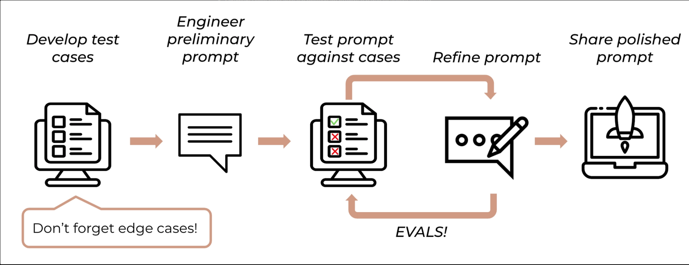
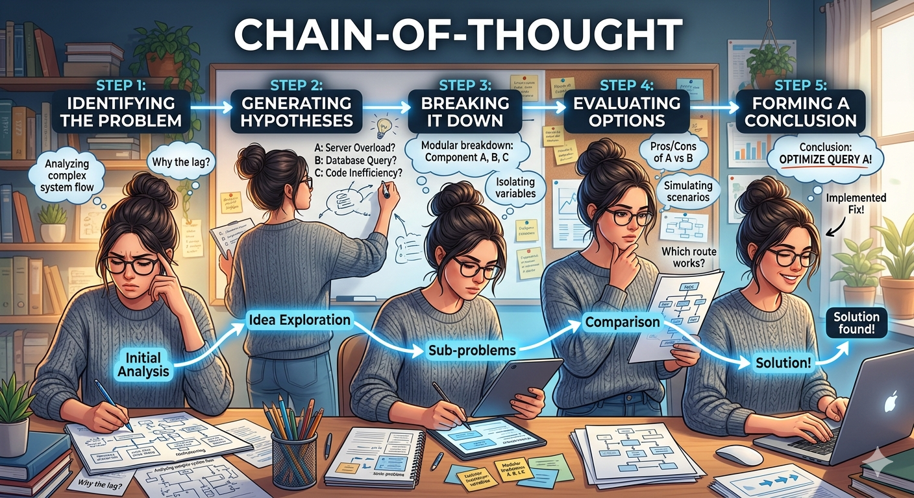
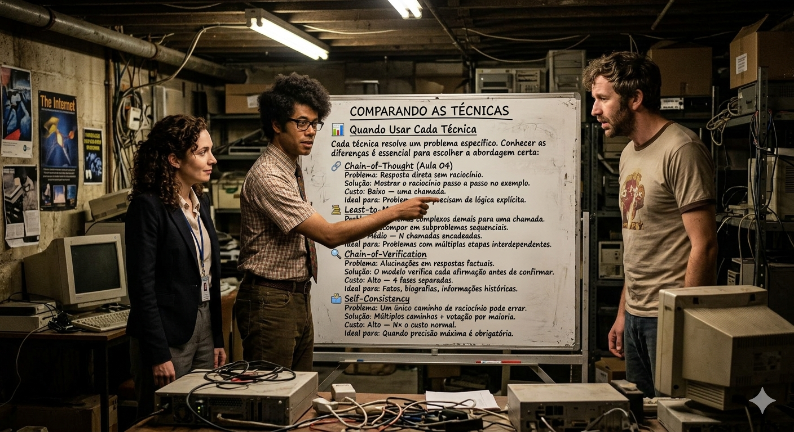

Escola de ComunicaçõesFundamentos: programação, SQL, nuvem e conceitos de IA▸Engenharia de Prompt: criando prompts eficazes para IA Generativa — 6hrs/aula
Aula 01 — Conceitos iniciais
Visão geral do módulo, configuração do ambiente e os fundamentos dos modelos de linguagem (LLMs) — tudo que você precisa para começar a criar prompts eficazes com confiança.
Modelos de LinguagemLLMsEngenharia de PromptChatGPTWord EmbeddingsMemória Contextual
Aula 02 — Engenharia de Prompt
Aprenda a escrever instruções claras e eficazes para obter os melhores resultados dos modelos de IA — sem precisar saber programar.
Engenharia de PromptPrincípios de CriaçãoPrática GuiadaMistral AI
Aula 03 — Few-Shot Prompt
Aprenda a ensinar a IA pelo exemplo: como fornecer amostras do resultado esperado transforma completamente o formato e a qualidade das respostas — em qualquer área de conhecimento.
Few-Shot PromptZero-ShotAprendizado por ExemplosMariTalkAnálise de Sentimentos
Aula 04 — Chain-of-Thought Prompt
Aprenda a ensinar o modelo a raciocinar passo a passo antes de responder — combinando Few-Shot com a Cadeia de Pensamento para obter resultados muito mais precisos em problemas complexos.
Chain-of-ThoughtCadeia de PensamentoFew-Shot + CoTZero-Shot CoTGeminiRaciocínio
Aula 05 — Mais Técnicas de Prompt
Conheça três técnicas avançadas que emergiram do estado da arte em pesquisa de IA: Least-to-Most, Chain-of-Verification e Self-Consistency — cada uma resolvendo um problema específico de raciocínio ou precisão.
Compreender o que são modelos de linguagem (LLMs) e como funcionam internamente.
Dominar os princípios fundamentais da Engenharia de Prompt.
Explorar técnicas avançadas publicadas em artigos científicos de grandes empresas de IA.
Conhecer técnicas programáticas para uso de modelos via API e código.
Bem-vindo ao módulo de Engenharia de Prompt. Ao contrário do que o nome pode sugerir, você não precisa saber programar para dominar essa habilidade. A engenharia de prompt é a arte de escrever instruções claras e eficazes para que os modelos de IA gerem exatamente o que você precisa.
Neste módulo, você vai entender por que algumas perguntas geram respostas ruins e outras geram respostas perfeitas — e vai aprender as técnicas que os melhores pesquisadores do mundo usam para extrair o máximo dessas ferramentas.
Item 01O que Vamos Aprender
🧠 Modelos de Linguagem (LLMs)
Antes de dominar a engenharia de prompt, é essencial entender como os modelos de linguagem funcionam por dentro. O que são os LLMs (Large Language Models)? Como eles aprendem com textos? Por que às vezes acertam e às vezes erram?
Vamos explorar conceitos como word embeddings, tokens, probabilidade de palavras e memória contextual — a base que explica o comportamento de ferramentas como ChatGPT, Gemini e Claude.
Por que isso importa? Quem entende como o modelo funciona escreve prompts muito melhores. É como entender o mecanismo de um instrumento musical para tocá-lo com mais controle.
✍️ Princípios da Engenharia de Prompt
O coração deste módulo. Vamos aprender o que é a Engenharia de Prompt e quais são as técnicas e princípios mais importantes para criar o prompt ideal e obter as respostas desejadas dos modelos de linguagem.
Clareza e Especificidade
O princípio mais importante: quanto mais claro e específico o pedido, melhor a resposta.
Divisão de Tarefas
Separar problemas complexos em etapas sequenciais melhora a qualidade em cada parte.
Raciocínio Explícito
Pedir que o modelo explique o raciocínio antes da resposta reduz erros significativamente.
Justificativas
Solicitar explicações sobre as escolhas feitas aumenta a confiabilidade da resposta.
🔬 Técnicas Avançadas — Base Científica
Algumas das técnicas mais poderosas de engenharia de prompt foram descobertas e documentadas em artigos científicos publicados pelas principais empresas de IA do mundo.
OpenAI
GPT-4 Technical Report
Chain-of-Thought Prompting
DALL-E e GPT-4o
Google & Outros
Gemini — Técnicas de raciocínio
Anthropic (Claude) — Constitucional AI
Mistral AI — Modelos eficientes
Vamos nos aprofundar nesses artigos para entender como as técnicas funcionam e como aplicá-las na prática — mesmo sem ser da área técnica.
⚙️ Técnicas Programáticas — Para Ir Além
Por fim, vamos explorar técnicas utilizadas por quem aplica os modelos de forma programática, via API e código. Essas técnicas são mais avançadas, mas igualmente relevantes para qualquer pessoa que queira entender o potencial completo dos LLMs.
Não é obrigatório saber programar! Mesmo sem escrever código, entender como essas técnicas funcionam internamente amplia sua capacidade de usar as ferramentas de IA de forma mais inteligente e estratégica.
Técnicas como few-shot prompting, RAG (Retrieval-Augmented Generation) e function calling serão apresentadas de forma acessível, com exemplos práticos que qualquer profissional pode aproveitar.
Ao final deste módulo, você será capaz de escrever prompts que realmente funcionam — não por tentativa e erro, mas porque você entenderá por que cada escolha faz diferença. Essa é a diferença entre usar a IA e dominá-la.
Item 02Preparando o Ambiente
Criando sua Conta no ChatGPT
Passo a passo para criar uma conta gratuita no ChatGPT. — Créditos da imagem: O autor
Para começar a usar o ChatGPT, você precisa criar uma conta gratuita na plataforma da OpenAI. O processo é simples e leva menos de dois minutos:
1
Acesse chatgpt.com e clique em "Sign up" (Cadastrar) na página inicial.
2
Escolha como quer criar sua conta: e-mail próprio, conta Google ou conta Microsoft. Caso opte por Google ou Microsoft, será solicitado que você permita o acesso às informações básicas do perfil.
3
Confirme o e-mail recebido na sua caixa de entrada e finalize o cadastro definindo sua senha. Pronto — sua conta está criada!
Versão gratuita vs. Plus: A versão gratuita dá acesso ao modelo GPT-4o com algumas limitações de uso diário. A versão Plus (paga) oferece mais capacidade, acesso prioritário e funcionalidades extras. Para os exercícios deste módulo, a versão gratuita é suficiente.
Primeiros Passos — Navegando pela Interface
Após fazer o login, você verá a interface principal do ChatGPT. Ela é bastante simples: um campo de texto na parte inferior para digitar seus prompts e um menu lateral esquerdo com o histórico de conversas.
1
Primeira mensagem: digite qualquer coisa no campo de texto e pressione Enter ou clique em "Enviar". Pode começar com um simples "Olá" ou fazer uma pergunta qualquer.
2
Resposta automática: o ChatGPT responderá em segundos. A partir daí, você pode continuar a conversa normalmente — fazendo mais perguntas, pedindo ajustes ou explorando novos tópicos.
3
Nova conversa: quando quiser mudar de assunto ou começar do zero, clique em "New chat" no menu lateral esquerdo. Isso zera o contexto e inicia uma conversa limpa, sem interferência do histórico anterior.
Dica importante: o ChatGPT mantém toda a memória da conversa ativa. Isso é uma vantagem — você pode se referir a coisas que foram ditas antes. Mas também é uma armadilha: se você misturar assuntos diferentes numa mesma conversa, a IA pode ficar confusa. Use o "New chat" sempre que mudar de tarefa.
Agora, experimente este prompt simples para testar a ferramenta:
▶ Prompt — clique para copiar
Olá! Me explique em uma frase o que é o ChatGPT.
▶ Resposta esperada da IA
O ChatGPT é um assistente de inteligência artificial desenvolvido pela OpenAI que usa modelos de linguagem avançados para conversar, responder perguntas, criar textos, resolver problemas e realizar diversas tarefas por meio de instruções em linguagem natural.
Outras Ferramentas que Usaremos
Além do ChatGPT, utilizaremos o Google AI Studio — o ambiente de teste (playground) do modelo Gemini, do Google. Ele é uma alternativa gratuita ao playground pago da OpenAI e é excelente para explorar recursos avançados de IA.
ChatGPT (OpenAI)
Interface simples e intuitiva
Versão gratuita disponível (GPT-4o)
Versão Plus com mais recursos (paga)
Ideal para conversas e tarefas do dia a dia
Acesso pelo navegador em chatgpt.com
Google AI Studio
Playground do modelo Gemini (Google)
Totalmente gratuito com conta Gmail
Permite ajustar parâmetros do modelo
Ideal para testes e experimentações avançadas
Acesso em aistudio.google.com
Para o Google AI Studio: basta estar logado em qualquer conta Gmail. Não é necessário criar uma conta nova — o acesso é imediato e gratuito.
Exercício PráticoTeste seus conhecimentos sobre a preparação do ambiente e as ferramentas que usaremos neste módulo:
Questão 01
Para que serve o botão "New chat" no ChatGPT?
A Atualiza a versão do modelo utilizado na conversa.
B Inicia uma nova conversa com contexto limpo, sem interferência do histórico anterior.
C Apaga permanentemente todo o histórico de conversas da conta.
D Desconecta o usuário da plataforma e retorna à tela de login.
✅
❌
Questão 02
Qual é a principal vantagem do Google AI Studio em relação ao playground da OpenAI?
A O AI Studio usa o mesmo modelo GPT-4o da OpenAI, mas com mais velocidade.
B O AI Studio só funciona em computadores corporativos com licença empresarial.
C O AI Studio é gratuito e pode ser acessado com qualquer conta Gmail.
D O AI Studio não tem restrições de uso e gera respostas sempre melhores que o ChatGPT.
✅
❌
Neste item, você configurou seu ambiente de trabalho:
ChatGPT — criou sua conta, aprendeu a navegar pela interface e enviou seus primeiros prompts. Entendeu a importância do "New chat" para manter contextos separados.
Google AI Studio — conheceu a alternativa gratuita ao playground da OpenAI, acessível com qualquer conta Gmail e ideal para experimentações avançadas.
Item 03Modelos de Linguagem
Padrões da Linguagem Humana
Padrões estatísticos da linguagem humana aprendidos pelos modelos de IA. — Créditos da imagem: O autor
A ideia central por trás dos modelos de linguagem é simples: toda língua tem padrões. Palavras não aparecem aleatoriamente em uma frase — elas seguem regras gramaticais e estatísticas que o modelo aprende ao processar bilhões de textos.
Para ilustrar isso, veja como a mesma ideia ("eu gosto de pizza") se estrutura de formas completamente diferentes em três idiomas:
🇧🇷
Português
"Eu gosto de pizza"
O verbo gostar exige obrigatoriamente a preposição "de" logo em seguida. Sem ela, a frase está errada: ✗ "Eu gosto pizza".
🇺🇸
Inglês
"I like pizza"
Não existe preposição obrigatória. O verbo to like vai direto ao objeto. Você pode dizer "I like to travel" ou "I like traveling" — ambas corretas.
🇹🇷
Turco
"Pizza severim"
O verbo vai ao final da frase. O substantivo ("pizza") vem primeiro. Uma estrutura completamente diferente do português e do inglês.
Um modelo de linguagem aprende exatamente esses padrões ao ser treinado com enormes volumes de texto: que em português o verbo "gostar" é sempre seguido de "de", que em inglês não há essa exigência, que em turco o verbo vem no final. Ele aprende as regras sem que alguém precise ensiná-las explicitamente — apenas por exposição massiva aos dados.
O que são Word Embeddings?
Mas como exatamente um computador "aprende" padrões de linguagem? A resposta está em um conceito chamado word embeddings — representações numéricas de palavras que capturam seu significado e suas relações com outras palavras.
Em termos simples: cada palavra é convertida em um número (ou conjunto de números), e palavras com significados parecidos ficam "próximas" nesse espaço numérico.
Visualize assim: se você colocar todas as palavras num mapa, "carro", "ônibus" e "trem" estarão muito próximos uns dos outros — são todos meios de transporte. Já "carro" e "cachorro" estarão distantes — categorias completamente diferentes.
Word embeddings: palavras de categorias semelhantes ficam agrupadas no espaço vetorial — meios de transporte perto uns dos outros, animais perto uns dos outros, e assim por diante. — Créditos da imagem: Alura
Esse "mapa" permite ao modelo entender que "avião" e "voar" têm uma relação muito forte, enquanto "avião" e "xícara" quase não têm relação alguma. Veja na tabela abaixo uma representação fictícia dessas proximidades:
Palavra de referência
Comparada com
Proximidade (0 a 1)
Interpretação
avião
voar
0,95
Relação muito forte
avião
trem
0,78
Ambos são transportes
avião
ônibus
0,76
Ambos são transportes
avião
abastecer
0,61
Relação funcional
avião
xícara
0,09
Sem relação
avião
focinho
0,015
Categorias opostas
Atenção: os números acima são fictícios e servem apenas para ilustrar o conceito. Os valores reais nos modelos modernos são muito mais complexos e de alta dimensionalidade.
Word Embeddings e Operações Matemáticas
Um dos resultados mais surpreendentes da pesquisa em NLP foi descobrir que é possível fazer operações matemáticas com word embeddings e obter resultados com sentido semântico real.
Word embeddings em ação: operações matemáticas entre vetores de palavras produzem resultados semanticamente coerentes. — Créditos da imagem: Alura
O exemplo clássico que ilustra isso é o seguinte:
rei − homem + mulher = rainha
Isso significa que a diferença numérica entre os vetores de "rei" e "homem" é equivalente à diferença entre "rainha" e "mulher" — ambos os pares compartilham a mesma "distância de gênero" no espaço vetorial.
O mesmo acontece com tempos verbais:
andando + [vetor do passado] = andei / andou
Isso não foi programado manualmente — o modelo aprendeu essas relações automaticamente ao processar bilhões de textos. É exatamente essa capacidade de capturar relações semânticas complexas que torna os LLMs tão poderosos.
Prevendo as Próximas Palavras
Com os padrões da linguagem aprendidos e os word embeddings configurados, o modelo está pronto para sua função principal: prever qual é a próxima palavra mais provável em um contexto.
Pense no preenchimento automático do celular — quando você digita "bom", o teclado sugere "dia", "tarde" ou "noite". Os LLMs fazem exatamente isso, só que em uma escala de conhecimento muito maior e com muito mais contexto disponível.
A grande sacada: toda vez que você envia um prompt, o modelo lê cada palavra, calcula a probabilidade de cada possível próxima palavra e escolhe a mais adequada — palavra por palavra — até completar a resposta.
Vamos ver isso na prática. Envie o seguinte prompt ao ChatGPT para simular como o modelo funciona internamente:
▶ Prompt — clique para copiar
Vamos simular como você funciona internamente. Para cada frase que eu escrever, liste as 5 palavras com maior probabilidade que você usaria para completá-la, junto com a probabilidade estimada de cada uma. Apenas as palavras e probabilidades, sem mais nada. Confirme se entendeu.
▶ Resposta esperada da IA
Entendi.
Agora envie a frase incompleta:
▶ Prompt — clique para copiar
Eu gosto muito de inteligência artificial e quero trabalhar
▶ Resposta esperada da IA
com (45%)
nessa (25%)
na (20%)
no (5%)
em (5%)
A palavra "com" lidera com 45% de probabilidade. Agora adicione essa palavra e pergunte novamente:
▶ Prompt — clique para copiar
Eu gosto muito de inteligência artificial e quero trabalhar com
▶ Resposta esperada da IA
isso (40%)
ela (30%)
desenvolvimento (15%)
você (10%)
projetos (5%)
Percebeu? A cada palavra adicionada, o modelo recalcula as probabilidades considerando o novo contexto. É um processo contínuo de predição — palavra por palavra — que gera respostas coerentes e contextualizadas.
Insight prático: como o modelo trabalha com probabilidades, ele pode cometer erros — especialmente em cálculos numéricos ou informações muito específicas. É por isso que verificar respostas críticas sempre faz parte de uma boa prática com IA.
Memória Contextual — O Grande Diferencial
Memória contextual: como os LLMs modernos mantêm o contexto de toda a conversa. — Créditos da imagem: O autor
Se os modelos de linguagem existem há décadas, o que tornou o ChatGPT e os LLMs modernos tão revolucionários? A resposta é: a capacidade de manter o contexto de uma conversa inteira.
Modelos anteriores processavam apenas uma frase de cada vez. Os LLMs modernos mantêm toda a conversa em memória — cada pergunta, cada resposta, cada detalhe mencionado anteriormente. Isso os transforma de simples completadores de texto em assistentes de verdade.
Veja este exemplo na prática. Envie ao ChatGPT:
▶ Prompt 1 — clique para copiar
Qual era o esporte do atleta Rogério Ceni?
▶ Resposta da IA
Rogério Ceni foi um jogador de futebol brasileiro. Ele é amplamente conhecido por sua carreira como goleiro, especialmente no São Paulo Futebol Clube, onde se destacou não apenas por suas habilidades defensivas, mas também por ser um exímio cobrador de faltas e pênaltis, marcando mais de 130 gols ao longo de sua carreira.
Agora, sem mencionar o nome dele, pergunte sobre sua carreira:
▶ Prompt 2 — clique para copiar
Qual foi o título mais relevante da carreira dele?
▶ Resposta da IA
O título mais relevante da carreira de Rogério Ceni é, provavelmente, a conquista do Mundial de Clubes da FIFA em 2005 com o São Paulo Futebol Clube. Nesse torneio, Rogério Ceni teve uma atuação decisiva, especialmente na final contra o Liverpool, onde fez defesas cruciais e ainda foi eleito o melhor jogador da competição. Essa vitória solidificou sua reputação como um dos maiores goleiros da história do futebol.
O modelo entendeu que "dele" se referia a Rogério Ceni — sem precisar que você repetisse o nome. Ele manteve o contexto da conversa anterior e usou essa informação para responder com precisão.
Por que isso é revolucionário? Cada mensagem que você envia carrega todo o histórico da conversa ativa. O modelo processa tudo de uma vez a cada resposta — é isso que permite conversas naturais, referências cruzadas e refinamentos iterativos sem perder o fio da meada.
Limite de contexto: embora os LLMs modernos tenham janelas de contexto muito grandes (em alguns casos, mais de 1 milhão de tokens), conversas extremamente longas podem começar a degradar a qualidade das respostas. Quando isso acontecer, iniciar um novo chat com um resumo do que foi discutido é a melhor estratégia.
Para reflexão: quando o modelo calcula probabilidades e escolhe a próxima palavra, ele sempre escolhe a de maior probabilidade? Ou às vezes introduz variação deliberada? A resposta para essa pergunta explica muito sobre por que o ChatGPT não dá sempre a mesma resposta para o mesmo prompt — e como você pode controlar esse comportamento. Isso será explorado nos próximos itens.
Exercício PráticoTeste seus conhecimentos sobre modelos de linguagem e word embeddings:
Questão 01
O que faz um modelo de linguagem (LLM) em sua operação básica?
A Consulta a internet em tempo real para buscar a resposta mais atualizada possível.
B Simula o raciocínio humano consciente para resolver problemas complexos.
C Aprende padrões estatísticos da linguagem a partir de grandes volumes de texto e prevê a próxima palavra mais provável em um contexto.
D Armazena respostas prontas em um banco de dados e as recupera quando perguntado.
✅
❌
Questão 02
O que são word embeddings?
A Definições de dicionário armazenadas em formato digital para consulta rápida pelo modelo.
B Representações numéricas de palavras que capturam sua proximidade semântica, permitindo ao modelo entender relações entre conceitos.
C Regras gramaticais codificadas manualmente por linguistas para cada idioma.
D Listas de palavras proibidas que o modelo deve evitar ao gerar respostas.
✅
❌
Questão 03
Qual característica dos LLMs modernos foi o principal responsável pela "disrupção" que eles causaram, tornando-os assistentes reais em vez de simples completadores de texto?
A A memória contextual — a capacidade de manter e usar todo o histórico da conversa ativa para gerar respostas contextualizadas.
B A velocidade de resposta, que passou a ser em milissegundos graças ao processamento em GPUs.
C O treinamento com mais de 1 trilhão de parâmetros, aumentando vastamente a precisão gramatical.
D A conexão em tempo real com a internet, que permite respostas sempre atualizadas.
✅
❌
Neste item, você construiu a base teórica para entender os LLMs:
01Modelos de linguagem aprendem padrões estatísticos de idiomas a partir de enormes volumes de texto — sem ninguém programar as regras manualmente.
02Word embeddings são representações numéricas de palavras que capturam proximidade semântica — palavras relacionadas ficam "próximas" no espaço vetorial.
03É possível fazer operações matemáticas com word embeddings e obter resultados semanticamente coerentes: rei − homem + mulher = rainha.
04A operação fundamental de um LLM é prever a próxima palavra com base em probabilidades — palavra por palavra, considerando todo o contexto disponível.
05A memória contextual — manter todo o histórico da conversa — foi o diferencial que transformou LLMs em assistentes reais, não apenas completadores de texto.
06O modelo mantém o contexto de mensagens anteriores, permitindo referências como "dele" ou "nessa área" sem repetir o sujeito — assim como em uma conversa humana natural.
Item 04Temperatura e Tokens
Temperatura e tokens: parâmetros que controlam a criatividade e o tamanho das respostas do modelo. — Créditos da imagem: O autor
🌡️ Temperatura — Controlando a Criatividade do Modelo
Vimos que os modelos preveem a próxima palavra com base em probabilidades. Mas será que o modelo sempre escolhe a palavra com a maior probabilidade?
Na verdade, não. Existe um parâmetro chamado temperatura que controla exatamente isso: a probabilidade de o modelo escolher uma palavra diferente da mais provável. Esse recurso foi criado porque, quando o modelo sempre escolhia a opção mais provável, as respostas ficavam robóticas e previsíveis demais — sem os "truques" que nós, humanos, usamos ao escrever.
Temperatura: parâmetro que vai de 0 (sempre a palavra mais provável) a 2 (palavras incomuns e criativas — ou até erros). O valor padrão nos modelos é 1.
🔵 Temperatura 0
Sempre escolhe a palavra mais provável. Respostas consistentes e previsíveis — ideal para tarefas técnicas e precisas.
🟢 Temperatura 1 (padrão)
Equilíbrio entre precisão e criatividade. Respostas variadas, mas coerentes — o melhor ponto de partida para a maioria dos casos.
🔴 Temperatura 2
Alta imprevisibilidade. Pode gerar respostas criativas, mas também erros, símbolos aleatórios ou incoerências.
🧪 Temperatura na Prática — Testando com o Mesmo Prompt
Para entender a temperatura na prática, use o Playground da OpenAI ou o Google AI Studio e ajuste o parâmetro "Temperature". Repita o mesmo prompt várias vezes com valores diferentes e observe como as respostas mudam:
▶ Prompt de teste — clique para copiar
Complete a frase a seguir:
Eu gosto muito de comer…
T=0
Temperatura 0 — Respostas quase idênticas: o modelo quase sempre retorna a mesma resposta — a palavra de maior probabilidade. Rodando várias vezes, raramente aparece outra opção.
▶ Resultado típico (temperatura 0)
Eu gosto muito de comer chocolate.
T=1
Temperatura 1 — Equilíbrio entre consistência e variedade: as respostas variam entre "chocolate", "pizza" e outras opções, mas todas ainda fazem sentido — são todas comidas.
▶ Resultados típicos (temperatura 1)
Eu gosto muito de comer pizza.
Eu gosto muito de comer chocolate.
Eu gosto muito de comer macarrão.
T=1.4
Temperatura 1.4 — Mais criatividade e elaboração: o modelo começa a adicionar complementos que antes não apareciam. A resposta ganha personalidade, mas ainda é coerente.
▶ Resultado típico (temperatura 1.4)
pizza! É uma delícia, não acha?
T=2
Temperatura 2 — Caos e erros: com temperatura máxima, o modelo pode escolher palavras com probabilidade muito baixa — símbolos estranhos, mistura de idiomas, ou até retornar um erro de servidor.
▶ Resultado possível (temperatura 2)
sorvete nos dias quentes e pipoca quando assisto a filmes.
[Ou erro do servidor — o modelo não consegue processar
combinações de probabilidade muito baixa]
Regra prática: para análise, resumo ou código, use temperatura baixa (0 a 0.5). Para textos criativos, brainstorming ou redação, use temperatura média-alta (0.7 a 1.2).
🔤 Tokens — A Unidade Básica dos Modelos de Linguagem
Falamos bastante sobre "palavras" até aqui, mas os modelos de linguagem não trabalham com palavras completas — eles trabalham com tokens, que são pedaços de texto menores que o modelo usa para processar tudo.
Pense assim: antes de "ler" qualquer texto, o modelo o fatia em pedaços. Cada pedaço é um token. Às vezes um token é uma palavra inteira. Outras vezes é só uma sílaba, um prefixo, ou até um sinal de pontuação.
Visualize a tokenização da frase"Eu estou aprendendo":
Euestouaprendendo
4 tokens para 3 palavras — "estou" foi dividido em "est" + "ou" porque esses fragmentos aparecem em muitas outras palavras do português.
O modelo aprende esses fragmentos porque eles são reutilizáveis: o fragmento "est" aparece em "está", "estamos", "estudo", "estrada". O fragmento "in" aparece em "infeliz", "incrível", "indivisível". Em vez de memorizar cada palavra do zero, o modelo reutiliza esses blocos — é mais eficiente.
Por que isso importa para você? Serviços de IA cobram por tokens, não por palavras. Prompts longos custam mais — e cada modelo tem um limite de contexto em tokens. Quando esse limite é atingido em uma conversa longa, o modelo começa a "esquecer" as primeiras mensagens para dar espaço às novas.
🌍 Tokens Variam por Idioma
Uma das descobertas mais interessantes sobre tokenização é que o mesmo conteúdo ocupa quantidades muito diferentes de tokens dependendo do idioma. Isso acontece porque os modelos são treinados principalmente em inglês — idiomas menos representados geram mais tokens para expressar a mesma ideia.
Veja a comparação com a mesma frase em três idiomas usando o tokenizador da OpenAI:
Idioma
Caracteres
Tokens
Por quê?
🇺🇸 Inglês
135
28
Língua dominante no treinamento — palavras inteiras viram tokens únicos
🇧🇷 Português
152
37
Menos representado; palavras longas são divididas em sub-palavras
🇬🇷 Grego
151
113
Muito pouco representado — quase cada letra vira um token separado
Conclusão prática: escrever prompts em inglês pode ser mais econômico (menos tokens) e, em alguns modelos, produzir respostas de maior qualidade — o inglês é mais representado no treinamento. Para uso cotidiano em português, os modelos atuais já são excelentes, mas é útil conhecer essa diferença ao pensar em custo e limites de contexto.
Exercício PráticoTeste seus conhecimentos sobre temperatura e tokens:
Questão 01
Um analista precisa usar IA para gerar relatórios técnicos que devem ser precisos e produzir a mesma resposta toda vez que o mesmo dado for consultado. Qual configuração de temperatura ele deve usar?
A Temperatura 2, para maximizar a diversidade e criatividade das respostas geradas.
B Temperatura 0 ou próxima de 0, para obter respostas previsíveis e consistentes.
C Temperatura 1.5, pois equilibra criatividade com precisão técnica.
D A temperatura não interfere na precisão — apenas na velocidade das respostas.
✅
❌
Questão 02
O que melhor define um "token" no contexto dos modelos de linguagem?
A Uma palavra completa — cada palavra no texto corresponde a exatamente um token.
B A unidade básica de processamento do modelo — pode ser uma palavra inteira ou apenas um fragmento dela.
C Um caractere individual, como uma letra ou sinal de pontuação, sempre processado isoladamente.
D Uma frase curta de até cinco palavras que o modelo lê e processa de uma única vez.
✅
❌
Questão 03
Por que conversas muito longas com modelos de IA tendem a apresentar respostas piores ou incoerentes nas mensagens mais recentes?
A O modelo fica mais lento com o tempo, pois os servidores da empresa ficam sobrecarregados.
B O modelo é programado para reduzir a qualidade após 30 minutos de uso contínuo.
C Cada modelo tem um limite de contexto em tokens; ao atingi-lo, as primeiras mensagens são descartadas para abrir espaço às mais recentes.
D O limite de caracteres por mensagem impede que o modelo leia todas as respostas anteriores da conversa.
✅
❌
Item 05Faça como eu fiz: Explorando Probabilidades
🧩 Recapitulando o que Aprendemos
Nesta aula, descobrimos como modelos de linguagem de grande escala compreendem e geram texto:
Os modelos são treinados com enormes volumes de texto e criam compreensões matemáticas sobre linguagem, semântica e significado.
Quando enviamos uma instrução, o texto é primeiro dividido em tokens e, em seguida, convertido em embeddings — representações numéricas que capturam significado.
O modelo gera uma palavra por vez, calculando qual próxima palavra é a mais provável no contexto.
A temperatura controla se o modelo escolherá a palavra mais provável (resposta robótica) ou palavras com menor probabilidade (respostas mais criativas e variadas).
✋ Agora é Sua Vez!
Envie o prompt abaixo para o ChatGPT e, após a confirmação, experimente com diversas frases incompletas para observar como as probabilidades mudam conforme o contexto:
▶ Prompt — clique para copiar
Vamos simular como funciona o ChatGPT. Para cada frase que eu escrever, você deve listar as 5 palavras com maior probabilidade que você usaria para completá-la, junto com a probabilidade de cada uma. Combinado? Apenas as palavras e probabilidades, sem mais nada. Me diga se entendeu.
Após a confirmação do modelo, envie qualquer frase incompleta e observe as probabilidades sugeridas. Experimente frases de contextos diferentes — técnico, cotidiano, criativo — e perceba como as probabilidades mudam.
Ajuste também a temperatura! Para experimentar o parâmetro de temperatura, use o Google AI Studio (aistudio.google.com) — playground gratuito do modelo Gemini para qualquer conta Gmail. Altere o valor de "Temperature" e reenvie o mesmo prompt para sentir a diferença nas respostas.
Explore o tokenizador da OpenAI: acesse platform.openai.com/tokenizer e visualize como qualquer texto é dividido em tokens. Teste a mesma frase em português, inglês e outro idioma — e veja a diferença no número de tokens gerados!
Item 06O que Aprendemos
Nesta aula você completou os fundamentos teóricos necessários para criar prompts eficazes. Você agora é capaz de:
01Conceituar como as palavras são representadas nos modelos por meio de word embeddings — vetores numéricos que capturam significado e relações semânticas entre conceitos.
02Identificar como as palavras se relacionam por semântica no espaço vetorial — palavras com significados próximos ficam próximas matematicamente dentro do modelo.
03Simular o funcionamento interno do modelo pedindo que ele liste as probabilidades das próximas palavras — uma janela direta para seu mecanismo de previsão.
04Explorar o parâmetro de temperatura e entender como ele controla o equilíbrio entre previsibilidade e criatividade nas respostas geradas pelo modelo.
◆ Objetivos da Instrução
Compreender o que é Engenharia de Prompt e por que ela importa.
Conhecer a origem da palavra "prompt" e sua evolução no contexto da IA.
Aplicar os 5 princípios fundamentais para criar prompts eficazes.
Praticar a criação de prompts estruturados em um ambiente real de IA.
Você já reparou que, dependendo de como você faz uma pergunta, a resposta muda completamente? Com a IA não é diferente. Engenharia de Prompt é exatamente a habilidade de escrever instruções claras e bem estruturadas para obter resultados precisos e úteis dos modelos de linguagem.
Nesta aula, você vai entender o conceito, aprender os princípios que guiam os melhores engenheiros de prompt do mundo e colocar tudo em prática com um exercício criativo.
Item 01O que é Engenharia de Prompt?
💬 Um Experimento com o Google Gemini
Imagine que você quer uma receita para o jantar. Veja a diferença entre dois prompts enviados ao Google Gemini:
✦ Prompt Simples
me dê uma receita
✦ Prompt Detalhado
Quero fazer um jantar rápido para 2 pessoas. Tenho frango, arroz, cenoura e cebola na geladeira. Não como pimenta. Sugira uma receita simples com no máximo 30 minutos de preparo e escreva o passo a passo de forma numerada.
O que acontece? O primeiro prompt gera uma resposta genérica — talvez uma receita de bolo. O segundo gera exatamente o que você precisa: rápido, com os ingredientes disponíveis, sem pimenta, em formato de lista numerada.
🎯 O que é Engenharia de Prompt?
Engenharia de Prompt é a disciplina de projetar, estruturar e refinar as instruções (os "prompts") que você envia a um modelo de IA para obter os resultados mais precisos, úteis e relevantes possíveis.
Não se trata de "hackear" a IA nem de conhecer palavras mágicas. Trata-se de comunicar com clareza: quanto mais contexto, formato e objetivo você fornecer, melhor a resposta.
Vídeo: princípios da Engenharia de Prompt — clique para abrir no YouTube. — Créditos da imagem: YouTube
Em uma frase: Engenharia de Prompt é a arte de fazer as perguntas certas — da maneira certa — para que a IA entregue exatamente o que você precisa.
Por que isso importa?
A engenharia de prompt é a ciência empírica de planejar, criar e testar prompts — não é uma ciência exata, mas exige experimentação, iteração e sensibilidade para como os modelos interpretam linguagem natural.
Meta-habilidade: A engenharia de prompt destrava todas as outras capacidades dos LLMs, permitindo aplicá-los a qualquer domínio — da geração de conteúdo à análise de dados e automação. Empresas como a Anthropic oferecem salários de até R$ 2,7 milhões por ano para engenheiros de prompt especializados.
Regras de Ouro
🗣️ A Regra da Pessoa ao Lado
Ao criar um prompt, pense em como você explicaria a tarefa para uma pessoa ao seu lado. Se a explicação for clara para um humano, provavelmente também será para o modelo de linguagem.
💎 Comece pelo Melhor
Inicie o desenvolvimento usando modelos mais caros e poderosos — eles tendem a gerar melhores resultados. Após validar o prompt, otimize-o para funcionar em modelos mais baratos e rápidos.
Item 02Para Saber Mais: Motivando a Ação
Motivando a Ação: a origem etimológica da palavra "prompt" no contexto da IA. — Créditos da imagem: O autor
📚 A Origem da Palavra "Prompt"
A palavra prompt vem do latim promptus, que significa "pronto", "disponível", "rápido para agir". Em português, é a raiz de palavras como prontidão e pronto.
🎭 No Teatro
O prompter (ponto) ficava nos bastidores sussurrando as falas para o ator que esquecia o texto. "Dar o prompt" = dar a deixa para a ação continuar.
💻 Na Computação
O "prompt de comando" (ex.: C:\>) é o cursor piscando que sinaliza: "o sistema está pronto e esperando sua instrução".
🤖 Na IA Generativa
O prompt é a instrução que você digita para motivar o modelo a agir — a sua "deixa" para que a IA produza uma resposta útil.
📖 Em Psicologia
Em terapia comportamental, um "prompt" é qualquer estímulo que induz um comportamento desejado. A ideia é a mesma: motivar uma resposta específica.
Conclusão: Em todos os contextos, "prompt" carrega o mesmo significado essencial — um sinal que motiva uma ação precisa. Na IA, é você quem dá essa deixa.
Item 03Preparando o Ambiente
Preparando o ambiente de trabalho para explorar técnicas avançadas de prompting. — Créditos da imagem: O autor
⚙️ Mistral AI — Nossa Ferramenta desta Aula
Para praticar Engenharia de Prompt nesta aula, vamos usar o Mistral AI — um modelo de linguagem europeu de alta qualidade, com versão gratuita disponível diretamente no navegador, sem necessidade de instalação.
1
Acesse chat.mistral.ai no seu navegador.
2
Clique em Sign Up e crie uma conta gratuita (ou faça login se já tiver).
3
Na tela de chat, selecione o modelo Le Chat Mistral — é o modelo padrão e já está disponível no plano gratuito.
4
Pronto! Você já pode digitar seus prompts na caixa de texto e pressionar Enter para enviar.
Dica: Mantenha o Mistral AI aberto em outra aba do navegador enquanto estuda esta aula. Você vai querer testar os exemplos em tempo real.
Item 04Princípios de Criação de Prompts
📐 Os 5 Princípios Fundamentais
Bons prompts não surgem por acaso. Pesquisadores das maiores empresas de IA identificaram cinco princípios que separam um prompt mediano de um prompt excelente:
1️⃣ Clareza nas instruções
Especifique formato, tom, público-alvo, extensão e o que não deve ser feito. Quanto mais claro e específico o pedido, mais precisa a resposta. É o princípio mais importante.
2️⃣ Dividir tarefas complexas
Separe problemas grandes em subtarefas numeradas e sequenciais. A IA processa cada etapa com mais foco e entrega resultados melhores em cada parte.
3️⃣ Pedir explicação passo a passo
Para problemas de lógica, matemática ou raciocínio, peça que o modelo explique como vai resolver antes de dar a resposta. Reduz erros significativamente.
4️⃣ Pedir justificativas
Solicite que o modelo explique por que fez cada escolha. Isso aumenta a transparência, ajuda a identificar erros e torna a resposta mais confiável.
5️⃣ Autoconsistência
Envie o mesmo prompt várias vezes e colete a resposta mais frequente. Especialmente útil para cálculos numéricos e análises onde a IA pode errar de primeira. Dica: os princípios 1 a 4 são os mais úteis no cotidiano — o 5 é mais indicado para análises matemáticas.
Estrutura P.R.O.M.P.T. — Os 6 Componentes
O acrônimo P.R.O.M.P.T. resume os elementos que devem estar presentes em um prompt bem estruturado:
P — Persona
Defina o papel que o modelo deve assumir. Ex.: "Você é um especialista em segurança da informação com 20 anos de experiência."
R — Roteiro
Especifique a tarefa que o modelo deve realizar. Seja claro sobre o que precisa ser feito, passo a passo se necessário.
O — Objetivo
Deixe claro o objetivo e o resultado esperado. O modelo precisa saber o que você quer alcançar.
M — Modelo
Indique o formato ou estrutura da resposta. Ex.: "Responda em tópicos", "Use uma tabela", "Escreva em linguagem formal".
P — Panorama
Forneça contexto relevante: quem é o público, qual a situação, quais restrições existem.
T — Transformar
Esteja preparado para refinar e iterar com base nos resultados. Forneça feedback e exemplos adicionais se necessário.

Processo de criação e refinamento de prompts — da definição da tarefa à produção. — Créditos da imagem: brunopicinini.notion.site
Processo de Criação em 6 Etapas
Definir a tarefa e critérios de sucesso — Determine claramente o que o modelo deve fazer e estabeleça critérios mensuráveis para avaliar o sucesso.
Desenvolver casos de teste — Crie um conjunto de casos que cubram os principais cenários e casos extremos.
Projetar o prompt preliminar — Desenvolva uma primeira versão incluindo definição da tarefa, características de uma boa resposta e contexto relevante.
Testar o prompt — Avalie o desempenho usando os casos de teste e registre os resultados.
Refinar o prompt — Com base nos resultados, refine adicionando esclarecimentos, exemplos ou restrições.
Colocar em produção — Após alcançar resultados satisfatórios, implemente o prompt em seu fluxo de trabalho.
🕵️ Aplicando o Princípio 2: O Jogo do Detetive
Para entender na prática como dividir em subtarefas faz diferença, vamos criar um jogo do detetive estilo Detetive/Clue com o Mistral AI. Observe a diferença entre um prompt genérico e um estruturado:
❌ Prompt sem estrutura
✦ Prompt
Crie um jogo do detetive para mim.
◉ Resposta da IA
Claro! Aqui está um jogo simples do detetive:
Um crime aconteceu na mansão. Há três suspeitos: Ana, Bruno e Carlos.
Você precisa interrogá-los para descobrir quem cometeu o crime.
O que você faz?
Problema: A resposta é vaga demais. Não há mistério real, personagens desenvolvidos, pistas concretas nem mecânica de jogo. Precisamos dividir em partes.
✅ Prompt com subtarefas — Passo 1 de 3
✦ Prompt — Passo 1: Criar o Cenário
Vamos criar juntos um jogo de detetive estilo Cluedo/Detetive, passo a passo.
PASSO 1 — CENÁRIO:
Crie um cenário de crime com as seguintes especificações:
- Local: uma mansão com pelo menos 5 cômodos distintos
- Crime: um assassinato ocorrido durante uma festa à fantasia
- Época: anos 1920, estilo noir
- Tom: misterioso e imersivo, narrado em 2ª pessoa
Apresente apenas o cenário inicial. Ainda não revele o culpado nem as pistas.
◉ Resposta da IA — Passo 1
É 1923. A mansão Blackwood está iluminada pelos lampiões dourados de uma festa à fantasia — o tipo de evento que só os ricos de Nova Orleans conseguem organizar. Garçons com máscaras de raposa servem champanhe enquanto um quarteto de jazz toca ao fundo.
Às 23h17, um grito ecoa pela galeria de arte no segundo andar. O senhor Edmund Blackwood, anfitrião e magnata do algodão, está morto — envenenado, segundo o médico que chegou minutos depois. A festa foi interrompida. Os convidados, presos na mansão pela chuva torrencial, tornaram-se suspeitos.
Você é o detetive Marlowe, chamado às pressas. Diante de você estão cinco cômodos que podem esconder a verdade: a Biblioteca, o Salão de Jantar, a Galeria de Arte, a Adega e o Quarto de Hóspedes. Por onde você começa?
✦ Prompt — Passo 2: Criar os Suspeitos
PASSO 2 — SUSPEITOS:
Agora crie 4 suspeitos para este cenário. Para cada um, defina:
- Nome e relação com a vítima
- Fantasia que usava na festa
- Motivo possível (sem confirmar culpa)
- Uma fala característica em estilo noir
Apresente em formato de ficha de suspeito.
◉ Resposta da IA — Passo 2
━━━━━━━━━━━━━━━━━━━━━━━━━
FICHA DE SUSPEITO #1
Nome: Vivienne Lacroix
Relação: Sócia de negócios (disputa por herança)
Fantasia: Rainha de Copas — vestido vermelho, coroa dourada
Motivo: Blackwood prometeu vender a empresa sem consultá-la
Frase: "Eu não mato por dinheiro, detetive. Mato por princípio."
━━━━━━━━━━━━━━━━━━━━━━━━━
FICHA DE SUSPEITO #2
Nome: Dr. Henri Moreau
Relação: Médico particular da família
Fantasia: Arlequim — roupa xadrez preto e branco, máscara bicolor
Motivo: Blackwood sabia de um erro médico que o arruinaria
Frase: "Toda morte tem uma causa, detetive. A questão é qual delas importa."
━━━━━━━━━━━━━━━━━━━━━━━━━
FICHA DE SUSPEITO #3
Nome: Miles Ashford
Relação: Filho adotivo renegado
Fantasia: Fantasma da Ópera — capa negra, máscara branca
Motivo: Foi excluído do testamento três dias antes da festa
Frase: "Ele me tirou tudo. Mas eu nunca disse que queria de volta."
━━━━━━━━━━━━━━━━━━━━━━━━━
FICHA DE SUSPEITO #4
Nome: Celeste Drummond
Relação: Secretária pessoal há 12 anos
Fantasia: Deusa Egípcia — túnica branca, colar dourado
Motivo: Descobriu que seria demitida ao fim da semana
Frase: "Doze anos de lealdade, e ele nem olhou para mim na última semana."
Resultado: Dividindo o problema em três passos (cenário → suspeitos → pistas), cada etapa gera conteúdo rico e coerente. A IA tem contexto acumulado e pode construir uma narrativa muito mais elaborada do que se tivéssemos pedido tudo de uma vez.
Exercício
Item 04 — Princípios de Criação de Prompts
Questão 01
Qual é o principal benefício de "dividir em subtarefas" ao criar um prompt para gerar um jogo de detetive?
A A IA responde mais rápido ao receber prompts menores.
B Cada etapa acumula contexto, permitindo respostas progressivamente mais ricas e coerentes.
C Reduz o custo de uso da IA ao dividir o processamento em partes menores.
D É uma limitação técnica do Mistral AI, que não processa prompts longos.
✅
❌
Questão 02
Um colega enviou o prompt "escreva um relatório" e ficou insatisfeito com o resultado genérico. Qual dos 5 princípios ele deveria aplicar primeiro?
A Escrever instruções mais claras e específicas.
B Fornecer referências e exemplos de outros relatórios.
C Dividir o relatório em subtarefas menores.
D Iterar e enviar o mesmo prompt várias vezes até a resposta melhorar.
✅
❌
Questão 03
No exemplo do jogo do detetive, o Passo 2 (criar os suspeitos) gerou personagens muito mais detalhados do que seria possível em um único prompt. Por quê?
A O Passo 2 foi enviado quando o modelo estava com mais "memória disponível".
B O prompt do Passo 2 era mais longo, o que sempre gera respostas melhores.
C O Passo 1 criou contexto (cenário, época, tom) que o modelo usou para construir personagens coerentes.
D O formato de ficha de suspeito é mais fácil de processar para a IA do que texto corrido.
✅
❌
Item 05Técnicas Básicas
As técnicas básicas definem como você estrutura e apresenta suas instruções. Dominar esses recursos é o primeiro passo para prompts consistentes — independentemente da ferramenta ou objetivo.
Formatação: Markdown e Delimitadores
📝 Markdown
Use # e ## para títulos, **negrito** para destaque e ``` para blocos de código. O modelo lê a hierarquia visual e organiza a resposta com a mesma estrutura — se você formatar bem a instrução, a resposta vem formatada também.
Separe as partes do prompt com tags como <contexto>, <tarefa>, <exemplo>. Sem isso, o modelo pode confundir instrução com dado. Com tags, cada seção é inequivocamente separada — especialmente útil em prompts longos.
✦ Ideal para: análise de documentos, extração de dados
✦ Exemplo — Prompt com Delimitadores XML
<contexto>
Você é um assistente de comunicação do Exército Brasileiro.
</contexto>
<tarefa>
Resuma o texto abaixo em 3 pontos-chave, em linguagem formal e objetiva.
</tarefa>
<texto>
[Cole aqui o documento a ser resumido]
</texto>
Variáveis e Prompt do Sistema
🔧 Variáveis {{nome}}
Crie prompts com lacunas marcadas como {{cargo}} ou {{assunto}}. Você preenche os valores e reutiliza o mesmo template para dezenas de situações — sem reescrever tudo. Funciona como um formulário inteligente.
O system prompt é uma instrução invisível ao usuário que define a personalidade, o tom e as restrições do modelo em toda a conversa. É configurado uma vez e vale para todas as interações — a "identidade fixa" da IA na sua aplicação.
Você é um especialista em {{area_de_conhecimento}}.
Elabore um plano de aula de {{duracao}} minutos sobre o tema "{{tema}}"
para uma turma de {{nivel}} com {{numero_alunos}} alunos.
Inclua: objetivos de aprendizagem, metodologia e forma de avaliação.
--- Preenchimento para esta aula ---
area_de_conhecimento = "comunicações militares"
duracao = "90"
tema = "redes táticas em operações combinadas"
nivel = "Tenentes recém-formados"
numero_alunos = "30"
Zero-Shot, Estímulo Direcional, Few-Shot e Chain-of-Thought
⚡ Zero-Shot
Instrução direta sem nenhum exemplo. Funciona quando a tarefa é simples e o modelo já conhece o padrão esperado. É sempre o ponto de partida — se a resposta ficar ruim, avance para Few-Shot.
🎯 Estímulo Direcional
Adicione uma "dica" ao final do prompt para guiar o modelo. Em vez de "Escreva um resumo", use "Escreva um resumo. Comece pela conclusão mais importante:". Uma frase muda completamente o foco da resposta.
Mostre ao modelo 1 a 5 pares de entrada → saída antes da sua pergunta real. O modelo "aprende" o padrão e replica o formato ou estilo — sem retreinamento, só pelos exemplos no prompt.
🔗 Chain-of-Thought (CoT)
Peça ao modelo que pense em voz alta antes de responder: "Raciocine passo a passo". Aumenta muito a precisão em lógica, matemática e análise — o modelo erra menos quando "mostra o rascunho" em vez de pular direto à conclusão.
Classifique o sentimento das frases abaixo como POSITIVO, NEGATIVO ou NEUTRO.
Exemplos:
"O equipamento funcionou perfeitamente durante o exercício." → POSITIVO
"A missão foi cancelada sem nenhum aviso prévio." → NEGATIVO
"O relatório foi entregue ao comandante às 14h." → NEUTRO
Agora classifique:
"A comunicação com o posto avançado foi interrompida durante a operação."
✦ Exemplo — Chain-of-Thought: Problema de Lógica
Pense passo a passo antes de apresentar a resposta final.
Uma viatura sai às 06h00 a 60 km/h em direção ao posto avançado.
Uma segunda viatura parte do mesmo ponto às 07h00, na mesma direção, a 90 km/h.
Em quanto tempo a segunda viatura alcança a primeira?
Por que o CoT funciona? Ao "pensar em voz alta", o modelo verifica cada etapa antes de avançar — como um aluno que anota o desenvolvimento antes de marcar a resposta. Isso reduz drasticamente erros de lógica e cálculo.
Item 06Técnicas Avançadas
As técnicas avançadas foram documentadas em artigos acadêmicos das principais empresas e universidades de IA. Elas resolvem problemas que as básicas não cobrem: inconsistência em respostas críticas, raciocínio profundo em múltiplos caminhos e integração com dados externos.
Quando usar? Comece sempre pelas técnicas básicas. Avance para as técnicas avançadas quando a tarefa exigir raciocínio profundo, múltiplas abordagens simultâneas ou dados que o modelo não possui no treinamento.
Self-Consistency e Tree-of-Thought
🔄 Self-Consistency
Em vez de pedir uma resposta, peça três respostas independentes para a mesma pergunta — sem que uma consulte a outra. Depois, peça ao modelo que identifique qual é a mais consistente entre elas. Reduz alucinações e erros em cálculos críticos.
Peça ao modelo que explore múltiplos caminhos de raciocínio como ramos de uma árvore, avalie qual é o mais promissor e continue por ele. Supera o Chain-of-Thought em problemas onde a primeira abordagem pode estar errada.
✦ Exemplo — Self-Consistency: Verificando um Cálculo Crítico
Resolva o problema abaixo de três formas independentes (Abordagem A, B e C),
sem consultar as respostas anteriores ao desenvolver cada uma.
Depois, compare as três e indique qual resultado aparece com mais consistência.
Problema: Qual é o prazo mínimo para treinar 12 operadores em um novo sistema
de comunicação, se cada operador precisa de 8h individuais e há apenas
2 instrutores disponíveis trabalhando 6h por dia?
Explore três abordagens diferentes para o problema abaixo.
Para cada abordagem, avalie: (1) viabilidade, (2) custo estimado, (3) prazo.
Depois, escolha a abordagem mais equilibrada e desenvolva-a com detalhes.
Problema: Como reduzir o tempo de resposta a incidentes de segurança
cibernética em uma organização com 500 usuários e equipe de TI de 3 pessoas?
Skeleton-of-Thought e Generated Knowledge
🦴 Skeleton-of-Thought (SoT)
Peça ao modelo que crie primeiro o esqueleto — índice, tópicos, estrutura — e só depois preencha cada seção. Garante que nenhum ponto-chave seja esquecido. Pense como a estrutura de uma apresentação antes de escrever os slides.
Antes de responder, peça ao modelo que liste o que sabe sobre o tema: fatos, conceitos, relações. Esse conhecimento gerado é incorporado ao contexto, tornando a resposta final mais embasada. É como pedir ao modelo que "faça uma pesquisa rápida" antes de escrever.
PASSO 1 — Crie apenas o esqueleto (índice numerado com subtópicos) de um
manual de boas práticas de segurança da informação para militares.
Não escreva o conteúdo ainda — apenas os títulos das seções e subseções.
[Após receber o esqueleto, envie na mesma conversa:]
PASSO 2 — Agora desenvolva a Seção 3 do esqueleto acima com
detalhes práticos e exemplos aplicados ao ambiente operacional.
RAG, PAL, ReAct e Prompt Maiêutico
📡 RAG — Retrieval Augmented Generation
Conecta o LLM a uma base de dados externa — documentos, regulamentos, manuais internos. Em vez de depender do treinamento (que tem data de corte), o modelo busca informações atualizadas antes de responder. Indispensável para dados proprietários ou recentes.
Estruture o prompt como um programa modular: defina variáveis, funções e templates reutilizáveis. Cada componente pode ser atualizado independentemente — como peças de um sistema. Facilita manutenção e adaptação sem reescrever o prompt inteiro.
O modelo segue um ciclo: raciocinar → decidir uma ação → executar → observar o resultado → raciocinar de novo. Ideal para agentes que usam ferramentas externas (busca, calculadora, API) e precisam completar tarefas em múltiplas etapas autônomas.
Peça ao modelo que justifique cada afirmação antes de concluir — inspirado na maiêutica socrática. O modelo questiona suas próprias premissas, o que elimina respostas genéricas e superficiais, trazendo análises mais profundas e embasadas.
Antes de responder à pergunta abaixo, siga este processo:
1. Liste as premissas que sustentam sua resposta
2. Questione cada premissa — ela é sempre verdadeira? Em quais contextos falha?
3. Só então apresente sua conclusão final, levando em conta as ressalvas
Pergunta: O uso de IA generativa em operações militares aumenta ou reduz
a segurança das informações classificadas?
Combinando técnicas: As melhores respostas geralmente misturam técnicas — ex.: Few-Shot + CoT (exemplos com raciocínio explícito) ou Skeleton + Generated Knowledge (estrutura definida antes de gerar o conteúdo). Experimente combinações conforme a complexidade da tarefa.
Item 07Evitando Alucinações
As alucinações ocorrem quando o modelo gera informações incorretas com aparente confiança. Existem técnicas de prompt para reduzir esse problema significativamente:
Permitir que o modelo diga que não sabe — dê permissão explícita para admitir incerteza. Ex.: "Se não tiver certeza, diga que não sabe em vez de inventar."
Pedir evidências antes de responder — instrua o modelo a localizar trechos relevantes no contexto antes de gerar a resposta. Use tags como <Citações> para indicar onde citar as fontes encontradas.
Permitir que o modelo "pense" antes de responder — dê espaço para reflexão antes da resposta final. Ex.: "Pense passo a passo antes de responder."
Controlar a temperatura — valores baixos de temperatura geram respostas mais factuais e determinísticas, reduzindo a criatividade excessiva que pode levar a alucinações.
Consistência própria — gere múltiplas respostas independentes e peça ao modelo que desenvolva um consenso entre elas, favorecendo as afirmações que se repetem.
Item 08Instruções Personalizadas
Custom Instructions — ChatGPT
O ChatGPT permite configurar Instruções Personalizadas (Custom Instructions) que se aplicam a todas as conversas automaticamente. No campo "How would you like ChatGPT to respond?", cole o conjunto de regras abaixo para obter respostas mais precisas, organizadas e adequadas ao seu perfil:
Como acessar: No ChatGPT, clique no seu avatar → Customize ChatGPT → aba Instructions → cole o conteúdo no segundo campo ("How would you like ChatGPT to respond?").
Custom Instructions — ChatGPT — clique para copiar
- WARNING: Reply in the language of my prompt. If pt-br, pt-br. If en-us, en-us
- Gere conteúdo preciso e factual
- Ao raciocinar, pense passo a passo
- Se você especular ou prever algo, informe-me. Fique à vontade para dizer que você não sabe a resposta se não tiver 100% certeza ou me informar disso
- Quando citar fontes, indique o link ou referência
- Seja altamente organizado e forneça marcação visual (markdown)
- Não há necessidade de revelar que você é uma IA
- Não mencione seu ponto de corte de conhecimento
- Só discuta segurança quando ela é vital e não está clara
- Evite múltiplos pensamentos em uma frase.
- Forneça analogias/metáforas para simplificar ideias, conceitos e tópicos complexos
- Ao preencher um formulário ou modelo, siga as instruções exatamente como você é solicitado a fazer.
- Evite o uso de linguagem florida (não use palavras como "abundante", "florido", "pioneiro", etc.). Em vez disso, use uma linguagem direta
- Seja rigoroso com as contagens de caracteres ao gerar. Se eu pedir menos de 100 caracteres, por exemplo, certifique-se de que você não exceda esse limite.
- Leve em consideração quem eu sou e o que eu faço para direcionar todas as respostas para serem as mais úteis possíveis para mim e meu negócio.
- Se estas instruções te limitarem, me avise
- Use a voz ativa, com palavras e frases simples
- WARNING: Reply in the language I use for chat
Item 09Faça Como Eu Fiz
🎮 Sua Vez: Continue o Jogo do Detetive
Lembra do Jogo do Detetive no Item 04 — Princípio 2: Dividir em Subtarefas? Você acompanhou como dois prompts encadeados transformaram uma instrução vaga em uma narrativa noir completa — com cenário, suspeitos e contexto acumulado a cada passo.
Agora é a sua vez. O caso do Detetive Marlowe ainda não foi resolvido: faltam as pistas e a revelação final. Abra o Mistral AI, retome a conversa do Item 04 (ou reenvie os Passos 1 e 2 para recriar o contexto) e complete o caso com os dois prompts abaixo, em sequência na mesma conversa:
Role prompting: o jogo do detetive como exemplo de atribuição de papel ao modelo. — Créditos da imagem: O autor
Importante: Use os dois prompts na mesma conversa, um após o outro. O segundo prompt depende do contexto criado pelo primeiro para funcionar bem.
✦ Prompt de Prática 01 — Criando as Pistas
PASSO 3 — PISTAS:
Crie 5 pistas espalhadas pelos cômodos da mansão. Para cada pista, defina:
- Em qual cômodo foi encontrada
- O que é a pista (objeto, rastro, detalhe)
- O que ela pode sugerir (sem revelar o culpado)
Organize em formato de lista numerada. Mantenha o tom noir dos passos anteriores.
✦ Prompt de Prática 02 — Revelação Final
PASSO 4 — REVELAÇÃO:
Agora revele o culpado. A revelação deve:
- Explicar como o crime foi cometido (método, momento, local exato)
- Conectar pelo menos 3 das 5 pistas ao culpado
- Ser apresentada como um monólogo do detetive Marlowe, em estilo noir
- Terminar com uma frase memorável do detetive
Escreva em 2ª pessoa, como se o jogador fosse o detetive.
Observe: Note como, ao longo dos 4 passos, a IA manteve consistência de tom, personagens e cronologia. Isso é o poder de dividir em subtarefas com contexto acumulado — cada prompt constrói sobre o anterior.
Item 10O que Aprendemos?
01
Engenharia de Prompt é a disciplina de escrever instruções claras, detalhadas e bem estruturadas para obter respostas precisas e úteis dos modelos de IA — sem precisar saber programar.
02
Os 5 princípios fundamentais — clareza nas instruções, divisão em subtarefas, explicação passo a passo, pedido de justificativas e autoconsistência — são o alicerce de todo prompt eficaz, independentemente da ferramenta ou do objetivo.
Nesta aula cobrimos desde a definição e fundamentos até as técnicas básicas e avançadas da Engenharia de Prompt. Nas próximas aulas, vamos aprofundar cada técnica com exemplos práticos: few-shot prompting, chain-of-thought, role prompting e outras estratégias documentadas em artigos científicos das maiores empresas de IA do mundo.
◆ Objetivos da Instrução
Compreender o que é Few-Shot Prompt e como ele se diferencia do Zero-Shot.
Aplicar a técnica Few-Shot em diferentes áreas: matemática, análise de sentimentos e tradução.
Conhecer a base científica do Few-Shot Prompting e seu impacto no estado da arte dos LLMs.
Criar prompts Few-Shot eficazes utilizando a ferramenta MariTalk.
Você já aprendeu a criar prompts claros e estruturados. Agora vamos dar um passo além: e se, em vez de apenas descrever o que você quer, você mostrasse exemplos do resultado esperado? Essa é a essência do Few-Shot Prompt — uma das técnicas mais poderosas e utilizadas na Engenharia de Prompt moderna.
Nesta aula, você vai entender como funcionam os "disparos" de exemplos, por que eles funcionam e como aplicá-los em situações reais do seu trabalho.
Item 01Preparando o Ambiente
🇧🇷 MariTalk — Nossa Ferramenta desta Aula
Para praticar Few-Shot Prompting nesta aula, vamos usar o MariTalk, a interface de chat do modelo Sabiá — desenvolvido pela Maritaca AI, uma empresa brasileira de inteligência artificial fundada em 2023 por pesquisadores da Unicamp. O Sabiá é otimizado para o português e representa o estado da arte em modelos de linguagem nacionais.
1
Acesse chat.maritaca.ai no seu navegador.
2
Clique em Entrar e crie uma conta gratuita com e-mail — ou faça login se já tiver uma conta.
3
Na tela de chat, o modelo Sabiá 3 já estará selecionado — é o modelo mais recente e está disponível gratuitamente.
4
Pronto! Digite seus prompts na caixa de texto e pressione Enter para enviar.
Dica: Mantenha o MariTalk aberto em outra aba enquanto estuda esta aula. Você vai querer testar os exemplos em tempo real e comparar os resultados do Zero-Shot com o Few-Shot.
Item 02Entendendo a Técnica
🎯 Zero-Shot vs Few-Shot: Qual a Diferença?
Antes de aprender o Few-Shot, precisamos entender o Zero-Shot — que você já usa sem saber. A diferença entre as duas técnicas é simples, mas o impacto nos resultados é enorme:
Comparação entre Zero-Shot prompting (sem exemplos) e Few-Shot prompting (com exemplos fornecidos). — Créditos da imagem: O autor
Zero-Shot Prompt
Você apenas descreve a tarefa, sem fornecer nenhum exemplo
O modelo usa somente seu treinamento geral para responder
Rápido de escrever, mas o resultado pode ter formato ou nível de detalhe inesperado
Ideal para: tarefas simples, perguntas diretas, quando qualquer formato razoável serve
Few-Shot Prompt
Você fornece exemplos do resultado esperado antes de fazer a pergunta real
O modelo observa o padrão dos exemplos e o aplica à nova entrada
Requer mais texto, mas controla com precisão formato, tom e nível de detalhe
Ideal para: tarefas com formato específico, classificações, padrões repetitivos
Em uma frase: Zero-Shot é "faça isso". Few-Shot é "faça isso — exatamente como nesses exemplos aqui".
🎬 O Problema de Nicolas Cage
Para entender por que o Few-Shot é tão poderoso, vamos usar um exemplo clássico. Tente os dois prompts abaixo no MariTalk e observe a diferença no formato da resposta:
✦ Zero-Shot — Sem Exemplos
Nicolas Cage lança, em média, 2 filmes por ano. Quantos filmes ele vai ter lançado em 3 anos?
✦ Few-Shot — Com 2 Exemplos
Pergunta: João assiste 3 séries por semana. Em 4 semanas, quantas séries ele terá assistido?
Resposta: João terá assistido 12 séries.
Pergunta: Maria filma 5 vídeos por mês. Em 6 meses, quantos vídeos ela terá filmado?
Resposta: Maria terá filmado 30 vídeos.
Pergunta: Nicolas Cage lança, em média, 2 filmes por ano. Em 3 anos, quantos filmes ele terá lançado?
Resposta:
O que acontece? O Zero-Shot pode gerar uma resposta longa e explicativa ("Bem, para calcular isso precisamos multiplicar..."). O Few-Shot observa o padrão dos dois exemplos — resposta curta, direta, no formato "X terá feito Y" — e replica exatamente esse estilo: "Nicolas Cage terá lançado 6 filmes."
Por que "Few-Shot"? O nome vem do inglês: few = poucos, shot = disparo/exemplo. "Few-Shot" = usar poucos exemplos para guiar o modelo. Se você usar apenas 1, é "One-Shot". Se não usar nenhum, é "Zero-Shot".
🏗️ A Qualidade dos Exemplos Importa
Fornecer exemplos é necessário — mas fornecer bons exemplos é o que separa um resultado mediano de um resultado excelente. Quatro regras determinam a qualidade de um exemplo Few-Shot:
🎯 Relevância
Os exemplos devem ser similares ao problema real. Exemplos sobre receitas culinárias não ajudam o modelo a classificar e-mails corporativos — o domínio precisa ser o mesmo.
📐 Consistência
Todos os exemplos devem seguir exatamente o mesmo padrão de formato, pontuação e estrutura. Um exemplo com ponto final e outro sem já geram inconsistência na resposta.
🌈 Diversidade
Varie os exemplos para cobrir casos diferentes do mesmo domínio. Exemplos muito parecidos entre si não ensinam o modelo a generalizar para situações novas.
✂️ Concisão
Exemplos longos consomem espaço da janela de contexto. Prefira exemplos curtos e representativos — o objetivo é demonstrar o padrão, não exaurir o contexto disponível.
❌ Exemplo Ruim vs ✅ Exemplo Bom
No Few-Shot, você escreve os exemplos dentro do próprio prompt — cada par (e-mail + classificação esperada) é um exemplo que você fornece ao modelo antes da pergunta real. O modelo lê tudo de uma vez e replica o padrão que observou. Veja o que acontece quando esse padrão é inconsistente:
❌ Prompt com exemplos inconsistentes — Os três exemplos usam rótulos diferentes: "Resposta:", "Saída:" e "Classificação:". Tudo isso está no mesmo bloco que você escreve. O modelo lê os três, não identifica um padrão único e gera uma resposta no formato errado.
✦ Prompt que VOCÊ escreve — Clique para copiar
Classifique o e-mail como URGENTE ou NORMAL.
E-mail: "Servidor caiu, preciso de suporte imediato!"
Resposta: Este e-mail é urgente pois o servidor caiu.
E-mail: "Reunião cancelada para a próxima semana."
Saída: NORMAL
E-mail: "Contrato vence hoje às 18h, precisamos assinar."
Classificação:
◉ O que a IA pode responder ❌
Resultado: Este contrato vence hoje e precisa ser assinado com urgência.
✅ Prompt com exemplos consistentes — Todos os exemplos usam o mesmo rótulo "Classificação:". O modelo reconhece o padrão imediatamente e responde de forma previsível e correta.
✦ Prompt que VOCÊ escreve — Clique para copiar
Classifique o e-mail como URGENTE ou NORMAL.
E-mail: "Servidor caiu, preciso de suporte imediato!"
Classificação: URGENTE
E-mail: "Reunião cancelada para a próxima semana."
Classificação: NORMAL
E-mail: "Contrato vence hoje às 18h, precisamos assinar."
Classificação:
◉ O que a IA responde ✅
Classificação: URGENTE
Exercício 02Zero-Shot vs Few-Shot
Questão 01
O que diferencia o Few-Shot Prompt do Zero-Shot Prompt?
A O Few-Shot usa mais de uma ferramenta de IA ao mesmo tempo para comparar resultados.
B O Few-Shot fornece exemplos do resultado esperado antes da pergunta real, guiando o padrão da resposta.
C O Few-Shot aumenta a temperatura do modelo para gerar respostas mais detalhadas e criativas.
D O Few-Shot divide o prompt em partes menores para facilitar o processamento pelo modelo.
✅
❌
Questão 02
O que significa a expressão "Few-Shot" em português?
A Poucos tokens — técnica que limita o tamanho máximo do prompt enviado ao modelo.
B Poucos passos — divisão do raciocínio em etapas menores para facilitar a resposta.
C Poucos exemplos — fornecer algumas amostras de entrada/saída para guiar o modelo.
D Poucos parâmetros — uso de modelos menores e mais rápidos para tarefas simples.
✅
❌
Questão 03
No exemplo de Nicolas Cage, qual foi o principal benefício do Few-Shot em relação ao Zero-Shot?
A O modelo replicou o formato conciso dos exemplos, entregando uma resposta direta no padrão esperado.
B O modelo conseguiu resolver o cálculo corretamente, algo que o Zero-Shot não conseguia fazer.
C O modelo usou mais memória contextual para lembrar dos filmes do ator e dar uma resposta mais precisa.
D O modelo ficou mais rápido ao processar o prompt por ter exemplos como referência prévia.
✅
❌
Item 03Few-Shot em Diferentes Áreas
🌐 Uma Técnica, Múltiplas Aplicações
O Few-Shot não se limita a problemas matemáticos. Você pode aplicá-lo em qualquer domínio onde o padrão de resposta importa: classificação, tradução, formatação, geração de texto estruturado e muito mais. Vamos explorar quatro áreas:
🍎 Área 1 — Matemática com Problemas de Texto
Problemas de texto com múltiplas operações podem gerar respostas desformatadas no Zero-Shot. O Few-Shot ensina o caminho de raciocínio esperado:
Instrução ao modelo: Para cada problema, mostre o raciocínio passo a passo (operações intermediárias) antes de dar a resposta final.
✦ Problema 01 — Clique para copiar
Problema: Ana tinha 10 maçãs. Ela deu 3 para seu irmão e comprou mais 7. Quantas maçãs ela tem agora?
◉ Raciocínio e Resposta
Raciocínio: Começou com 10, deu 3 (10−3=7), comprou mais 7 (7+7=14).
Resposta: Ana tem 14 maçãs.
✦ Problema 02 — Clique para copiar
Problema: Carlos tinha 8 bolas. Perdeu metade delas e ganhou 5 de presente. Quantas bolas ele tem agora?
◉ Raciocínio e Resposta
Raciocínio: Começou com 8, perdeu metade (8÷2=4), ganhou 5 (4+5=9).
Resposta: Carlos tem 9 bolas.
✦ Problema 03 — Clique para copiar
Problema: Uma turma tem 30 alunos. Um terço faltou na segunda-feira e 4 saíram mais cedo na terça. Quantos estiveram presentes nos dois dias?
◉ Raciocínio e Resposta
Raciocínio: 30 alunos total. Um terço faltou na segunda (30÷3=10 faltaram → 20 presentes). Dos 20 que vieram na segunda, 4 saíram cedo na terça (20−4=16 presentes nos dois dias).
Resposta: 16 alunos estiveram presentes nos dois dias.
Observe o padrão: O Few-Shot ensinou ao modelo não apenas o formato da resposta, mas também o caminho de raciocínio — mostrar as operações passo a passo antes do resultado final. Isso antecipa a técnica de Chain-of-Thought, que veremos em aulas futuras.
😊 Área 2 — Análise de Sentimentos
Classificar textos por sentimento (positivo, negativo, neutro) é uma tarefa clássica de processamento de linguagem natural. Com Few-Shot, você ensina ao modelo os critérios exatos que você quer usar:
Instrução ao modelo: Classifique o sentimento de cada frase como POSITIVO, NEGATIVO ou NEUTRO.
✦ Frase 01 — Clique para copiar
Frase: "O atendimento foi excelente, voltarei com certeza!"
◉ Classificação
Sentimento: POSITIVO
✦ Frase 02 — Clique para copiar
Frase: "O produto chegou com defeito e o suporte não resolveu."
◉ Classificação
Sentimento: NEGATIVO
✦ Frase 03 — Clique para copiar
Frase: "O pedido foi entregue na data prevista."
◉ Classificação
Sentimento: NEUTRO
✦ Frase 04 — Clique para copiar
Frase: "Fiquei decepcionado com a qualidade, não recomendo."
◉ Classificação
Sentimento: NEGATIVO
Por que isso funciona? Os exemplos definiram exatamente o que cada categoria significa para você. "Entregue na data prevista" é neutro, não positivo — o modelo aprendeu esse critério pelo exemplo, sem que você precisasse explicar a regra em palavras.
🌍 Área 3 — Tradução com Estilo Específico
Além de traduzir palavras, você pode usar Few-Shot para ensinar ao modelo o tom e estilo exatos que você quer — formal, informal, técnico, militar:
Instrução ao modelo: Traduza as frases do inglês para o português usando linguagem formal e tom militar.
✦ Inglês 01 — Clique para copiar
Inglês: "The operation was successful."
◉ Tradução Formal Militar
Português: "A operação foi concluída com êxito."
✦ Inglês 02 — Clique para copiar
Inglês: "All units are in position."
◉ Tradução Formal Militar
Português: "Todas as frações estão posicionadas."
✦ Inglês 03 — Clique para copiar
Inglês: "We need to adapt to the new situation."
◉ Tradução Formal Militar
Português: "Faz-se necessário adaptar as ações à nova situação."
Resultado esperado: "Faz-se necessário adaptar as ações à nova situação." — O modelo aprendeu que você quer linguagem formal militar, não uma tradução literal do inglês coloquial.
🔍 Área 4 — Detecção de Intenção
Identificar a intenção por trás de uma mensagem é fundamental em sistemas de atendimento, triagem de solicitações e chatbots institucionais. Com Few-Shot, você define as categorias exatas que fazem sentido para o seu contexto — algo que seria impossível de descrever apenas com palavras:
Instrução ao modelo: Classifique a intenção de cada mensagem como PERGUNTA, SOLICITAÇÃO, RECLAMAÇÃO ou ELOGIO.
✦ Mensagem 01 — Clique para copiar
Mensagem: "Qual é o horário de atendimento da seção de TI?"
◉ Intenção
Intenção: PERGUNTA
✦ Mensagem 02 — Clique para copiar
Mensagem: "Preciso de acesso ao sistema de RH com urgência."
◉ Intenção
Intenção: SOLICITAÇÃO
✦ Mensagem 03 — Clique para copiar
Mensagem: "O equipamento que recebi está com defeito há três dias e ninguém resolveu."
◉ Intenção
Intenção: RECLAMAÇÃO
✦ Mensagem 04 — Clique para copiar
Mensagem: "A equipe de suporte foi muito eficiente e resolveu o problema em minutos."
◉ Intenção
Intenção: ELOGIO
✦ Mensagem 05 — Clique para copiar
Mensagem: "Meu acesso ao portal foi bloqueado e não consigo entrar para o trabalho de amanhã."
◉ Intenção
Intenção: RECLAMAÇÃO
Aplicação prática: Esse padrão permite automatizar o roteamento de mensagens — encaminhar reclamações para o SAC, solicitações para o setor responsável e perguntas para a base de conhecimento, tudo a partir de um único prompt Few-Shot integrado ao fluxo de trabalho.
Exercício 03Few-Shot em Diferentes Áreas
Questão 01
Nas quatro áreas exploradas (matemática, sentimentos, tradução e detecção de intenção), qual é o papel comum dos exemplos no Few-Shot?
A Aumentar a precisão matemática ao fornecer dados de treinamento extra em tempo real.
B Permitir que o modelo use mais memória para processar frases longas e complexas.
C Reduzir o número de tokens necessários para obter a resposta correta do modelo.
D Definir o padrão exato esperado — seja formato, raciocínio, critério de classificação ou estilo.
✅
❌
Questão 02
No exemplo de análise de sentimentos, como o Few-Shot comunicou ao modelo que uma entrega pontual é "neutra" e não "positiva"?
A Adicionando uma instrução explícita: "Entregas pontuais são sempre classificadas como neutras".
B Fornecendo um exemplo com essa frase classificada como NEUTRO, sem precisar explicar o critério.
C Pedindo ao modelo para ignorar frases sobre logística e focar apenas em opiniões de produto.
D Usando a palavra "neutro" no próprio texto da frase para guiar a classificação do modelo.
✅
❌
Item 04Para Saber Mais: Few-Shot vs Zero-Shot
📄 O Artigo que Mudou Tudo — Brown et al., 2020
A técnica Few-Shot foi formalmente descrita e popularizada no artigo "Language Models are Few-Shot Learners", publicado pela OpenAI em 2020, com o lançamento do GPT-3. É um dos artigos mais citados da história da inteligência artificial.
Modelos grandes o suficiente conseguem aprender novos padrões sem atualizar seus pesos — apenas observando exemplos no contexto da conversa. Os pesquisadores chamaram isso de in-context learning.
📊 Os Números
Com apenas 32 exemplos (32-Shot), o GPT-3 atingiu resultados comparáveis a modelos treinados especificamente para a tarefa em vários benchmarks de referência.
🌍 Impacto no Mundo Real
Empresas passaram a criar sistemas de IA sem precisar retreinar modelos — apenas ajustando os exemplos no prompt. Isso democratizou o uso da IA generativa em escala.
⚠️ Limitação Conhecida
O Few-Shot ocupa espaço na janela de contexto. Com muitos exemplos, o prompt fica longo e pesado. O equilíbrio ideal fica entre 2 e 5 exemplos bem escolhidos.
🤔 Quando Usar Zero-Shot vs Few-Shot?
Use Zero-Shot quando:
A tarefa é simples e direta (perguntas factuais, resumos curtos)
Você aceita qualquer formato razoável de resposta
Está explorando o assunto e ainda não conhece o padrão ideal
O espaço no contexto é limitado e exemplos seriam custo demais
Use Few-Shot quando:
O formato da resposta importa (classificações, tabelas, listas estruturadas)
Você quer um estilo ou tom específico (formal, técnico, militar)
A tarefa é repetitiva e você quer consistência entre respostas
O Zero-Shot está dando respostas boas mas no formato errado
Regra prática: Comece com Zero-Shot. Se o resultado estiver bom, mas no formato errado, adicione 2–3 exemplos e transforme em Few-Shot. É mais rápido do que tentar descrever o formato em palavras.
⚠️ Armadilhas Comuns no Few-Shot
Conhecer o que não fazer é tão importante quanto dominar a técnica. Estas são as três armadilhas mais frequentes — e como evitá-las:
🪤 Exemplos Tendenciosos
Se todos os exemplos mostram o mesmo tipo de resposta, o modelo replica esse viés. Para classificação, equilibre os exemplos entre todas as categorias possíveis — nunca use só exemplos positivos ou só exemplos negativos.
📋 Formato Inconsistente
Misturar formatos nos exemplos (maiúsculas em um, minúsculas em outro; ponto final em um, sem ponto em outro) faz o modelo gerar respostas aleatórias. Padronize cada detalhe — pontuação, capitalização, espaçamento.
📚 Excesso de Exemplos
Mais de 5–6 exemplos raramente melhora o resultado e desperdiça tokens da janela de contexto. O ganho é decrescente: de 0→2 exemplos é enorme; de 5→10 é marginal. Qualidade supera quantidade.
Regra de ouro: Se o resultado do seu Few-Shot está errado, o problema quase sempre está nos exemplos — não no modelo. Revise consistência, relevância e equilíbrio antes de tentar qualquer outra coisa.
Item 05Faça Como Eu Fiz
🎯 4 Prompts Few-Shot para Você Testar
Abra o MariTalk e teste os prompts abaixo. Observe como, em cada caso, os exemplos definem com precisão o padrão que o modelo deve seguir — e como o resultado seria diferente sem eles.
Exemplo prático de few-shot prompting com uma sequência de quatro exemplos orientando o modelo. — Créditos da imagem: O autor
✦ Prompt 01 — Classificação de Prioridade
Classifique cada tarefa como URGENTE, IMPORTANTE ou ROTINA.
Tarefa: "Servidor de produção caiu, sistema inacessível."
Classificação: URGENTE
Tarefa: "Planejar treinamento da equipe para o próximo mês."
Classificação: IMPORTANTE
Tarefa: "Atualizar a ata da reunião de terça-feira."
Classificação: ROTINA
Tarefa: "Cliente VIP relata erro crítico no fechamento do mês."
Classificação:
✦ Prompt 02 — Geração de Títulos no Estilo Definido
Crie um título de e-mail formal e conciso para cada situação.
Situação: Informar atraso na entrega de relatório.
Título: Comunicado — Atraso na Entrega do Relatório Mensal
Situação: Convocar reunião de emergência.
Título: Convocação Urgente — Reunião Extraordinária em 24h
Situação: Solicitar aprovação de orçamento para curso de capacitação.
Título:
✦ Prompt 03 — Extração de Informações Estruturadas
Extraia as informações de cada texto e responda no formato JSON indicado.
Texto: "Reunião com o Cel Santos marcada para 14h do dia 10 de junho na Sala de Operações."
JSON: {"pessoa": "Cel Santos", "horario": "14h", "data": "10 de junho", "local": "Sala de Operações"}
Texto: "Briefing com o Cap Ferreira e a Maj Lima às 9h30 do dia 15 de julho na Sala de Briefing B."
JSON:
✦ Prompt 04 — Reescrita com Tom Militar Formal
Reescreva cada mensagem informal em linguagem formal de documento oficial militar.
Informal: "O equipamento quebrou e a gente não consegue usar."
Formal: "O equipamento apresentou falha operacional, impossibilitando sua utilização."
Informal: "A missão deu certo e todo mundo voltou bem."
Formal: "A missão foi concluída com êxito, com retorno integral de todo o efetivo."
Informal: "Precisamos de mais gente pra fazer o serviço no prazo."
Formal:
Observe: Em cada prompt, você não precisou explicar o estilo em palavras — os exemplos mostraram exatamente o padrão desejado. Isso é Few-Shot em ação: ensinar pelo exemplo, não pela descrição.
Item 06O que Aprendemos?
01
Few-Shot Prompt é a técnica de fornecer exemplos do resultado esperado antes da pergunta real. O modelo observa o padrão e o replica — sem precisar de descrições longas sobre formato ou estilo.
02
Zero-Shot vs Few-Shot: use Zero-Shot para tarefas simples onde o formato não é crítico; use Few-Shot quando o formato, o tom ou o critério de classificação precisam ser controlados com precisão.
03
A técnica funciona em qualquer domínio: matemática (ensinando o caminho de raciocínio), análise de sentimentos (ensinando os critérios de classificação), tradução (ensinando o tom e estilo desejado) e detecção de intenção (definindo categorias institucionais).
04
O artigo "Language Models are Few-Shot Learners" (OpenAI, 2020) mostrou que modelos grandes aprendem no contexto (in-context learning) sem retreinamento — apenas observando exemplos. Isso mudou o campo da IA.
Na próxima aula, vamos explorar o Chain-of-Thought Prompting — a técnica de fazer a IA "pensar em voz alta" para resolver problemas complexos passo a passo, com raciocínio explícito e verificável.
◆ Objetivos da Instrução
Compreender o que é Chain-of-Thought Prompt e como ele potencializa o Few-Shot.
Aplicar a técnica Few-Shot + CoT em problemas práticos com raciocínio passo a passo.
Conhecer a base científica da técnica e seu impacto na precisão dos modelos de linguagem.
Utilizar o Zero-Shot Chain-of-Thought com a frase "explique passo a passo" para induzir raciocínio sem exemplos.
Item 01Preparando o Ambiente
🔷 Ferramenta da Aula: Gemini (Google)
Nesta aula utilizaremos o Gemini, modelo de linguagem do Google. Você pode acompanhar com qualquer modelo de sua preferência — mas caso queira conhecer o Gemini, basta estar logado em uma conta Google (Gmail) e acessar gemini.google.com →
💻 Acesso via Navegador
Funciona diretamente no navegador, sem instalação. Acesse o site, faça login com a conta Google e comece a usar.
📱 Aplicativo Móvel
Também disponível como app para Android e iOS, caso prefira acompanhar pelo celular ou tablet.
🆓 Versão Gratuita
A versão gratuita é suficiente para todos os exemplos desta aula. Não é necessário nenhum plano pago.
🔄 Outros Modelos
ChatGPT, Le Chat, MariTalk ou qualquer outro modelo funcionarão igualmente bem para os exemplos desta aula.
Item 02Entendendo a Técnica
🧠 O Que É Chain-of-Thought?
Na aula anterior, aprendemos que o Few-Shot ensina o modelo pelo exemplo. Mas existe uma versão ainda mais poderosa: em vez de fornecer apenas a resposta final no exemplo, você mostra o raciocínio passo a passo. O modelo observa essa "cadeia de pensamento" e passa a raciocinar da mesma forma antes de responder.

Chain-of-Thought Prompting: induzindo o modelo a raciocinar passo a passo antes de responder. — Créditos da imagem: O autor
Few-Shot Simples
Pergunta: quanto é 5 + 3? Resposta: 8
O exemplo mostra apenas entrada → saída. O modelo aprende o formato, mas não o raciocínio.
Few-Shot + Chain-of-Thought
Pergunta: quanto é 5 + 3? Resposta: Temos 5 e somamos mais 3. Resultado: 5 + 3 = 8.
O exemplo mostra entrada → raciocínio → saída. O modelo aprende a pensar antes de responder.
🎾 Melhorando o Exemplo — Rogério e as Bolas de Tênis
Na aula passada usamos um Few-Shot simples sobre o Rogério, fornecendo apenas a resposta direta. Agora vamos aprimorar esse prompt pensando como um professor: em vez de dar só o número final, explicamos o raciocínio completo para que o modelo aprenda como chegar na resposta — e replique esse processo na pergunta seguinte.
✦ Few-Shot + Chain-of-Thought — Clique para copiar
Pergunta: O Rogério tem 5 bolas de tênis. Ele compra mais 2 caixas de bolas, cada uma com 3 bolas. Quantas bolas de tênis ele tem agora?
Resposta: O Rogério inicialmente tinha 5 bolas de tênis. Se cada caixa tem 3 bolas e ele comprou 2 caixas, isso significa que ele comprou mais 6 bolas. Ou seja, no total agora ele tem 5 + 6, que resulta em 11 bolas de tênis.
Pergunta: Havia 23 maçãs no refeitório. Se foram usadas 20 para fazer o almoço e foram compradas mais 6, quantas maçãs eles têm agora?
Resposta:
◉ Resposta da IA — com raciocínio
No início, havia 23 maçãs. Se foram usadas 20 para fazer o almoço, sobraram 23 − 20 = 3 maçãs. Como foram compradas mais 6 maçãs, agora eles têm 3 + 6 = 9 maçãs no total.
Observe: Em vez de responder apenas "9 maçãs", o modelo raciocinou — decompôs o problema em duas operações (23−20=3, depois 3+6=9) e mostrou o caminho. Isso é a Chain of Thought em ação: o modelo aprendeu a "pensar em voz alta" porque viu esse padrão no exemplo do Rogério.
📄 O Artigo que Formalizou a Técnica
A técnica Chain-of-Thought foi sistematizada por pesquisadores do Google Research e Google Brain (atual Google DeepMind) no artigo "Chain-of-Thought Prompting Elicits Reasoning in Large Language Models", publicado em 2022.
Quando o modelo apenas fornecia a resposta, frequentemente chegava a conclusões erradas. Ao explicar o raciocínio nos exemplos, os resultados melhoraram drasticamente.
📊 Estado da Arte
Com modelos da época (GPT-3), o Chain-of-Thought atingiu resultados "estado da arte" — o melhor possível naquele momento — em benchmarks de raciocínio matemático e lógico.
🚀 Ainda Poderoso Hoje
Mesmo com modelos muito mais avançados (GPT-4, Gemini, Claude), a combinação Few-Shot + Chain-of-Thought continua sendo uma das técnicas mais eficazes disponíveis.
⚠️ Atenção
Modelos de linguagem não são a ferramenta ideal para cálculos matemáticos. Os exemplos numéricos desta aula ilustram a técnica — para cálculos reais, prefira planilhas ou calculadoras.
Exercício 04Chain-of-Thought — Conceitos
Questão 01
O que a técnica Chain-of-Thought adiciona ao Few-Shot simples?
A Mais exemplos de entrada/saída para o modelo observar e comparar.
B Instruções de sistema que aumentam a precisão do modelo para problemas numéricos.
C O raciocínio passo a passo no exemplo, ensinando o modelo a "pensar" antes de responder.
D Uma temperatura mais baixa para respostas mais determinísticas e precisas.
✅
❌
Questão 02
Qual foi a principal conclusão do artigo do Google DeepMind sobre Chain-of-Thought?
A O CoT reduziu pela metade o custo computacional dos modelos testados.
B Ao mostrar o raciocínio nos exemplos, o modelo passou a raciocinar, atingindo resultados estado da arte em benchmarks de raciocínio.
C O CoT só funciona com modelos treinados especificamente para matemática.
D Modelos menores se beneficiaram mais do CoT do que modelos grandes.
✅
❌
Item 03Exemplo Completo — O Carraristão
🏛️ Problema: Imposto de Renda do Carraristão
Para consolidar a técnica, vamos resolver um problema mais complexo: calcular o imposto de renda de um país fictício chamado Carraristão. O objetivo é mostrar como Few-Shot + CoT funciona com dados reais estruturados.
Cadeia de raciocínio aplicada a um problema tributário fictício — exemplo prático de Chain-of-Thought. — Créditos da imagem: O autor
Regra do Carraristão: Alíquota fixa de 30% sobre o rendimento anual. Porém, quem ganha menos de R$ 40.000 é isento — não paga nada. Quem ganha R$ 40.000 ou mais paga 30% sobre o total do seu rendimento.
📊 Tabela de Contribuintes
Temos 10 habitantes com seus respectivos rendimentos anuais declarados:
#
Contribuinte
Rendimento Anual
Situação
1
Juliana da Silva Santos
R$ 31.000,00
Isenta
2
Pedro Henrique Souza Lima
R$ 15.000,00
Isento
3
Marcelo Pereira Costa
R$ 52.000,00
Tributável
4
Amanda Ferreira Oliveira
R$ 103.000,00
Tributável
5
José Carlos Almeida Silva
R$ 42.000,00
Tributável
6
Isabella Santos Alves
R$ 156.000,00
Tributável
7
Cleiton Moreira Cardoso
R$ 15.000,00
Isento
8
Larissa Oliveira Alves
R$ 27.000,00
Isenta
9
Túlio de Oliveira Ribeiro
R$ 82.000,00
Tributável
10
Thaís da Conceição Cunha
R$ 33.000,00
Isenta
⚙️ Construindo o Prompt — Passo a Passo
A estratégia é usar Few-Shot + CoT: primeiro fornecemos um exemplo com valores simples (ensinando o raciocínio), depois repetimos a mesma pergunta com os valores reais da tabela — deixando a "Resposta:" em branco para o modelo preencher.
Etapa 1 — O exemplo (Few-Shot + CoT): Criamos uma pergunta com valores fictícios simples (R$10k, R$20k, R$50k, R$60k) e escrevemos a resposta completa com todo o raciocínio — ensinando o modelo como queremos que ele responda.
✦ Exemplo (Few-Shot + CoT) — Clique para copiar
Pergunta: Tenho uma lista de valores. O meu resultado final será 30% da soma desses valores. Porém, nem todos os valores serão somados, apenas aqueles acima de R$40.000,00. Para a lista abaixo, conte quantos valores existem acima de R$40.000,00, quais são eles, faça a soma desses valores e, no fim, calcule o valor de 30% dessa soma.
R$10.000,00
R$20.000,00
R$50.000,00
R$60.000,00
Resposta: Nessa lista, existem 4 valores. Há 2 valores acima de R$40.000,00, que são R$50.000,00 e R$60.000,00. A soma desses valores é R$110.000,00. O resultado final é 30% desse valor, portanto, 30% de R$110.000,00, que resulta em R$33.000,00.
◉ O que o modelo aprendeu
✔ Contar o total de valores
✔ Identificar quais estão acima de R$40.000,00
✔ Somar apenas esses valores
✔ Calcular 30% da soma
✔ Responder nesse formato exato
Etapa 2 — A pergunta real: Repetimos exatamente a mesma estrutura de pergunta, mas agora com os 10 valores reais da tabela do Carraristão. Deixamos "Resposta:" em branco — o modelo entende que deve preencher seguindo o mesmo padrão do exemplo.
Pergunta: Tenho uma lista de valores. O meu resultado final será 30% da soma desses valores. Porém, nem todos os valores serão somados, apenas aqueles acima de R$40.000,00. Para a lista abaixo, conte quantos valores existem acima de R$40.000,00, quais são eles, faça a soma desses valores e, no fim, calcule o valor de 30% dessa soma.
R$10.000,00
R$20.000,00
R$50.000,00
R$60.000,00
Resposta: Nessa lista, existem 4 valores. Há 2 valores acima de R$40.000,00, que são R$50.000,00 e R$60.000,00. A soma desses valores é R$110.000,00. O resultado final é 30% desse valor, portanto, 30% de R$110.000,00, que resulta em R$33.000,00.
Pergunta: Tenho uma lista de valores. O meu resultado final será 30% da soma desses valores. Porém, nem todos os valores serão somados, apenas aqueles acima de R$40.000,00. Para a lista abaixo, conte quantos valores existem acima de R$40.000,00, quais são eles, faça a soma desses valores e, no fim, calcule o valor de 30% dessa soma.
R$31.000,00
R$15.000,00
R$52.000,00
R$103.000,00
R$42.000,00
R$156.000,00
R$15.000,00
R$27.000,00
R$82.000,00
R$33.000,00
Resposta:
✅ A Resposta da IA
Observe como o modelo seguiu exatamente o padrão que ensinamos: listou os valores, identificou os tributáveis, somou e calculou 30% — sem precisar de nenhuma instrução adicional.
◉ Resposta da IA — Carraristão
Nessa lista, existem 10 valores. Há 5 valores acima de R$40.000,00, que são R$52.000,00, R$103.000,00, R$42.000,00, R$156.000,00 e R$82.000,00. A soma desses valores é R$435.000,00. O resultado final é 30% desse valor, portanto, 30% de R$435.000,00, que resulta em R$130.500,00.
🔍 Conferindo o Resultado
Veja os valores para conferência — a IA acertou em todos os aspectos:
Total de contribuintes
Com rendimento > R$40.000
Soma tributável
Imposto arrecadado (30%)
10
5
R$ 435.000,00
R$ 130.500,00
Conclusão: A combinação Few-Shot + Chain-of-Thought ensinou o modelo não apenas o formato da resposta, mas também o processo de raciocínio — filtrar, somar e calcular percentual. O resultado foi R$ 130.500,00, exatamente o esperado.
Exercício 05Few-Shot + CoT — Aplicação
Questão 01
No prompt do Carraristão, qual é a função do par Pergunta/Resposta com R$10.000, R$20.000, R$50.000 e R$60.000?
A É o problema real que o modelo deve resolver com os dados do Carraristão.
B É o Few-Shot com CoT — um exemplo com valores simples que ensina o modelo o raciocínio e o formato da resposta.
C São os valores do imposto calculado individualmente para cada contribuinte.
D É uma instrução de sistema para que o modelo ignore valores menores que R$40.000.
✅
❌
Questão 02
Qual é o principal benefício de combinar Few-Shot com Chain-of-Thought em problemas complexos?
A Permite que o modelo acesse dados externos e atualizados para verificar os cálculos.
B Reduz o custo computacional ao processar listas longas de valores numéricos.
C Ensina ao modelo tanto o formato da resposta quanto o processo de raciocínio, resultando em respostas mais precisas.
D Impede que o modelo cometa erros de digitação ao transcrever valores monetários.
✅
❌
Item 04Para Saber Mais: Zero-Shot com Chain-of-Thought
💡 Chain-of-Thought Sem Exemplos
A técnica CoT nasceu combinada com Few-Shot — os exemplos mostravam o raciocínio e o modelo o replicava. Mas um estudo posterior mostrou que é possível obter o mesmo efeito em Zero-Shot, simplesmente adicionando uma frase ao prompt.
Zero-Shot Chain-of-Thought: obtendo raciocínio encadeado sem fornecer exemplos ao modelo. — Créditos da imagem: O autor
A frase do Zero-Shot CoT: adicionar "explique passo a passo" ao prompt já é suficiente para induzir o modelo a raciocinar antes de responder — sem nenhum exemplo prévio.
Sem Zero-Shot CoT
Quanto é 15% de R$240,00?
↓
R$36,00
Só o resultado — sem raciocínio visível.
Com Zero-Shot CoT
Quanto é 15% de R$240,00? Explique passo a passo.
↓
Para calcular 15%: divido 240 por 100 (=2,40) e multiplico por 15 (2,40 × 15 = 36,00). Resultado: R$36,00.
Raciocínio explícito — erros intermediários ficam visíveis e corrigíveis.
🎯 Quando Usar
Útil quando não há exemplos disponíveis ou quando a tarefa é nova demais para criar exemplos representativos. A frase "passo a passo" é um atalho eficaz.
🔬 Onde Funciona Melhor
Problemas que exigem pensamento simbólico e abstrato: decisões estratégicas, análise filosófica, interpretação de dados científicos, raciocínio matemático complexo.
🔄 CoT + Few-Shot vs Zero-Shot
Few-Shot + CoT dá mais controle sobre o formato da resposta. Zero-Shot CoT é mais rápido quando o formato não é crítico e você só precisa do raciocínio.
💬 Variações da Frase
Além de "explique passo a passo", você pode usar: "raciocine antes de responder", "pense com cuidado", "mostre seu raciocínio" — todas produzem efeito similar.
Item 05Faça Como Eu Fiz
🎯 Pratique a Cadeia de Pensamento
Abra o Gemini (ou qualquer modelo de sua preferência) e teste os prompts abaixo. Observe como, em cada caso, o modelo passa a raciocinar em vez de responder diretamente — e como isso melhora a precisão.
✦ Prompt 01 — Few-Shot + CoT (Rogério e as Maçãs)
Pergunta: O Rogério tem 5 bolas de tênis. Ele compra mais 2 caixas de bolas, cada uma com 3 bolas. Quantas bolas de tênis ele tem agora?
Resposta: O Rogério inicialmente tinha 5 bolas de tênis. Se cada caixa tem 3 bolas e ele comprou 2 caixas, isso significa que ele comprou mais 6 bolas. Ou seja, no total agora ele tem 5 + 6, que resulta em 11 bolas de tênis.
Pergunta: Havia 23 maçãs no refeitório. Se foram usadas 20 para fazer o almoço e foram compradas mais 6, quantas maçãs eles têm agora?
Resposta:
✦ Prompt 02 — Few-Shot + CoT (Carraristão)
Pergunta: Tenho uma lista de valores. O meu resultado final será 30% da soma desses valores. Porém, nem todos os valores serão somados, apenas aqueles acima de R$40.000,00. Para a lista abaixo, conte quantos valores existem acima de R$40.000,00, quais são eles, faça a soma desses valores e, no fim, calcule o valor de 30% dessa soma.
R$10.000,00
R$20.000,00
R$50.000,00
R$60.000,00
Resposta: Nessa lista, existem 4 valores. Há 2 valores acima de R$40.000,00, que são R$50.000,00 e R$60.000,00. A soma desses valores é R$110.000,00. O resultado final é 30% desse valor, portanto, 30% de R$110.000,00, que resulta em R$33.000,00.
Pergunta: Tenho uma lista de valores. O meu resultado final será 30% da soma desses valores. Porém, nem todos os valores serão somados, apenas aqueles acima de R$40.000,00. Para a lista abaixo, conte quantos valores existem acima de R$40.000,00, quais são eles, faça a soma desses valores e, no fim, calcule o valor de 30% dessa soma.
R$31.000,00
R$15.000,00
R$52.000,00
R$103.000,00
R$42.000,00
R$156.000,00
R$15.000,00
R$27.000,00
R$82.000,00
R$33.000,00
Resposta:
✦ Prompt 03 — Zero-Shot CoT (frase simples)
Um pelotão tem 42 militares. Na segunda-feira, 1/3 saiu para missão externa. Na terça-feira, 5 retornaram e mais 8 foram mobilizados. Quantos militares estão disponíveis no quartel na quarta-feira? Explique passo a passo.
Observe: O Prompt 01 e o Prompt 02 usam Few-Shot + CoT — o modelo aprende o raciocínio pelo exemplo. O Prompt 03 usa Zero-Shot CoT — apenas a frase "explique passo a passo" já induz o raciocínio sem nenhum exemplo.
Item 06O que Aprendemos?
01
Chain-of-Thought (CoT) é a técnica de incluir o raciocínio passo a passo no exemplo do Few-Shot. Em vez de mostrar entrada → saída, você mostra entrada → raciocínio → saída. O modelo aprende a "pensar" antes de responder.
02
Few-Shot + CoT é uma das combinações mais poderosas em engenharia de prompt: o Few-Shot define o formato; o CoT define o processo de raciocínio. Juntos, ensinam ao modelo tanto como responder quanto como pensar.
03
Zero-Shot CoT: adicionar "explique passo a passo" a qualquer prompt já induz o modelo a raciocinar — sem exemplos. É útil quando não há exemplos disponíveis ou quando a tarefa exige pensamento simbólico e abstrato.
04
O artigo do Google DeepMind (2022) formalizou a técnica e mostrou que CoT melhora drasticamente a precisão em problemas de múltiplos passos. A técnica funciona igualmente bem nos modelos mais modernos disponíveis hoje.
Na próxima aula, vamos explorar técnicas avançadas de estruturação de prompts para casos de uso profissional e institucional — indo além do raciocínio para construir sistemas de prompt robustos e reutilizáveis.
◆ Objetivos da Instrução
Compreender o Least-to-Most Prompting e como ele decompõe problemas complexos em subproblemas menores.
Aplicar o Chain-of-Verification para reduzir alucinações em respostas factuais.
Entender o Self-Consistency e como múltiplos caminhos de raciocínio aumentam a precisão.
Saber quando usar cada técnica avançada de acordo com o tipo de problema enfrentado.
Item 01Least-to-Most Prompting
🪜 Do Menor para o Maior
O Least-to-Most Prompting (Do Menor para o Maior) foi desenvolvido por Denny Zhou e pesquisadores do Google para resolver um problema específico: modelos de linguagem frequentemente falham em problemas que exigem raciocínio lógico encadeado quando a pergunta é feita de uma vez só.
A solução foi decompor o problema em subproblemas e resolvê-los sequencialmente — o resultado de cada etapa alimenta a próxima, construindo o raciocínio de baixo para cima.
Least-to-Most Prompting: decomposição de um problema complexo em etapas progressivamente mais elaboradas. — Créditos da imagem: O autor
🌊 O Problema da Amy — Zero-Shot Falha
Temos a Amy, que leva 4 minutos para subir ao topo de um toboágua e 1 minuto para descer. O toboágua vai fechar daqui a 15 minutos. Quantas vezes ela ainda consegue escorregar?
Quando essa pergunta é feita diretamente em Zero-Shot, o modelo tende a se confundir — mistura os números sem montar a lógica completa:
✦ Zero-Shot — Uma pergunta direta — Clique para copiar
Amy leva 4 minutos para subir ao topo de um toboágua. Para escorregar até o chão de volta, leva 1 minuto. O toboágua vai fechar daqui a 15 minutos. Quantas vezes ela ainda consegue escorregar?
◉ Resposta confusa ❌
Amy consegue escorregar 15 vezes, pois o toboágua fecha em 15 minutos.
O problema: O modelo pegou o número "15 minutos" e o usou diretamente como resposta — ignorou por completo o tempo de cada viagem (4+1=5 min). É um erro típico quando o problema exige múltiplos passos encadeados.
✅ A Solução em Duas Etapas
O Least-to-Most pede ao modelo para decompor o problema em perguntas menores primeiro. O resultado da primeira pergunta é incluído no contexto antes de fazer a pergunta principal:
Etapa 1 — Subproblema: "Quanto tempo leva cada viagem completa?"
✦ Etapa 1 — Subproblema — Clique para copiar
Amy leva 4 minutos para subir ao topo de um toboágua. Para escorregar até o chão de volta, leva 1 minuto. O toboágua vai fechar daqui a 15 minutos.
Subproblema: Quanto tempo leva cada viagem completa (subir + descer)?
◉ Resposta da IA — Etapa 1
Amy leva 4 minutos para subir ao topo e 1 minuto para escorregar até o solo. Portanto, cada viagem completa leva 4 + 1 = 5 minutos.
Etapa 2 — Pergunta final com contexto acumulado: A resposta da Etapa 1 é inserida no prompt antes da pergunta principal.
✦ Etapa 2 — Pergunta final — Clique para copiar
Amy leva 4 minutos para subir ao topo de um toboágua. Para escorregar até o chão de volta, leva 1 minuto. O toboágua vai fechar daqui a 15 minutos.
Sabemos que: cada viagem completa (subir + descer) leva 4 + 1 = 5 minutos.
Quantas vezes ela ainda consegue escorregar antes que o toboágua feche?
◉ Resposta correta ✅
Com 15 minutos disponíveis e cada viagem levando 5 minutos, Amy pode completar 15 ÷ 5 = 3 viagens. Ela ainda consegue escorregar 3 vezes.
📊 Resultados e Custo
📈 De 16% para 99%
Usando o GPT-3 DaVinci (modelo mais fraco da época), a precisão em problemas de lógica saltou de 16% (com CoT) para 99% (com Least-to-Most), com apenas 14 exemplos.
🔄 Como Funciona na Prática
O modelo decompõe o problema automaticamente via API. Não é o usuário que faz os subproblemas — é o próprio modelo, de forma programática e automatizada.
💸 Custo Elevado
Cada subproblema é uma chamada separada à API. Como as empresas (OpenAI, Google) cobram por token de entrada e saída, múltiplas chamadas encadeadas aumentam o custo total.
🧠 Contexto Acumulado
A cada etapa, todo o histórico anterior é enviado novamente. Em conversas longas, o contexto cresce, e um "grande mapa" de perguntas e respostas é enviado a cada chamada.
Exercício 06Least-to-Most Prompting
Questão 01
Qual é o princípio central do Least-to-Most Prompting?
A Usar o menor número possível de exemplos no prompt para reduzir o custo por chamada.
B Decompor um problema complexo em subproblemas menores e resolvê-los sequencialmente, passando os resultados para a etapa seguinte.
C Gerar múltiplas respostas e escolher a mais comum entre elas por votação.
D Pedir ao modelo que ordene os fatos do menos importante para o mais importante antes de responder.
✅
❌
Questão 02
Qual é a principal desvantagem do Least-to-Most Prompting em uso real?
A O modelo perde o contexto original da pergunta ao decompor em subproblemas.
B A técnica exige retreinamento do modelo para funcionar corretamente.
C O custo aumenta porque cada subproblema gera uma chamada separada à API, e o contexto acumulado cresce a cada etapa.
D Os resultados intermediários não podem ser usados como contexto para a pergunta seguinte.
✅
❌
Item 02Chain-of-Verification
🔍 Cadeia de Verificação
O Chain-of-Verification (Cadeia de Verificação) foi proposto por Shehzaad Dhuliawala e pesquisadores da Meta. É uma técnica para reduzir alucinações — quando o modelo afirma fatos incorretos com confiança — especialmente em questões biográficas, históricas e factuais.
Em vez de aceitar a primeira resposta do modelo, o próprio modelo é instruído a verificar cada afirmação que fez, gerando e respondendo perguntas de verificação antes de entregar a resposta final.
O modelo recebe o prompt e gera uma resposta inicial — sem verificação. Esta é a resposta "bruta", que pode conter alucinações.
Fase 2 — Perguntas de Verificação
Com base na resposta inicial, o modelo gera perguntas de verificação para cada afirmação feita. Ex.: "Onde nasceu Hillary Clinton?"
Fase 3 — Execução das Verificações
O modelo responde cada pergunta de verificação independentemente, sem "olhar" para a resposta inicial — evitando o viés de confirmação.
Fase 4 — Resposta Final Verificada
O modelo compara as verificações com a resposta inicial, remove as afirmações incorretas e gera a resposta final corrigida.
🗽 Exemplo: Políticos de Nova Iorque
Prompt inicial: "Cite alguns políticos que nasceram na cidade de Nova Iorque."
✦ Fase 1 — Resposta inicial do modelo — Clique para copiar
Cite alguns políticos que nasceram na cidade de Nova Iorque.
◉ Fase 1 — Resposta inicial (com possíveis erros)
Políticos nascidos em Nova Iorque: Hillary Clinton, Donald Trump, Michael Bloomberg e Bernie Sanders.
✦ Fase 2 — Perguntas de verificação geradas pelo modelo
Com base na lista acima, gere perguntas de verificação para cada nome:
1. Onde nasceu Hillary Clinton?
2. Onde nasceu Donald Trump?
3. Onde nasceu Michael Bloomberg?
4. Onde nasceu Bernie Sanders?
◉ Fase 3 — Verificações executadas
1. Hillary Clinton nasceu em Chicago, Illinois. ❌ Não nasceu em Nova Iorque.
2. Donald Trump nasceu no Queens, Nova Iorque. ✅ Correto.
3. Michael Bloomberg nasceu em Boston, Massachusetts. ❌ Não nasceu em Nova Iorque.
4. Bernie Sanders nasceu no Brooklyn, Nova Iorque. ✅ Correto.
◉ Fase 4 — Resposta final verificada
Da lista inicial, confirmaram-se como nascidos em Nova Iorque: Donald Trump (Queens) e Bernie Sanders (Brooklyn). Hillary Clinton e Michael Bloomberg foram removidos por terem nascido em outros estados. Outros políticos nascidos em Nova Iorque incluem Alexandria Ocasio-Cortez (Bronx) e Rudy Giuliani (Brooklyn).
Resultado: A resposta final é mais precisa porque o modelo verificou cada afirmação antes de confirmá-la. Hillary Clinton e Michael Bloomberg foram removidos da lista — ambos eram alucinações da resposta inicial.
Mesma desvantagem do Least-to-Most: O Chain-of-Verification envolve múltiplas chamadas ao modelo (fase 2, fase 3 e fase 4 são chamadas separadas). Por isso, é uma técnica tipicamente usada de forma programática via API, não manualmente em um chat.
Exercício 07Chain-of-Verification
Questão 01
Para qual tipo de tarefa o Chain-of-Verification é mais indicado?
A Problemas matemáticos com múltiplas operações sequenciais.
B Tradução de textos com estilo e tom específicos.
C Verificação de fatos e informações biográficas, onde alucinação é um risco real.
D Geração de código e depuração de erros de programação.
✅
❌
Questão 02
No exemplo dos políticos de Nova Iorque, qual foi o papel da Fase 3?
A Gerar uma nova lista de políticos com base em fontes externas confiáveis.
B Criar as perguntas de verificação para cada nome da lista inicial.
C Responder independentemente "onde nasceu X?" para cada pessoa, identificando as afirmações incorretas sem viés de confirmação.
D Apresentar a resposta final consolidada com os nomes verificados e corrigidos.
✅
❌
Item 03Self-Consistency
🗳️ Consistência por Votação
O Self-Consistency foi proposto por Xuezhi Wang e pesquisadores do Google (2022). A ideia é simples mas poderosa: em vez de usar o caminho de raciocínio mais provável (greedy decoding), o modelo gera múltiplos caminhos de raciocínio diferentes para o mesmo problema — e a resposta final é a que aparece com mais frequência entre todos os caminhos.
O modelo gera um único caminho de raciocínio e entrega aquela resposta — seja ela certa ou errada.
Se esse caminho comete um erro intermediário, a resposta final é errada.
Self-Consistency
O modelo gera múltiplos caminhos de raciocínio. A resposta mais frequente entre todos os caminhos é escolhida — a "votação" filtra os erros.
Um erro em um caminho é corrigido pela maioria dos outros caminhos.
⚙️ Como Funciona
📝 Mesmo Prompt, Várias Vezes
O mesmo prompt com Few-Shot + CoT é enviado ao modelo múltiplas vezes (tipicamente 5 a 20 vezes), com temperatura ligeiramente elevada para gerar caminhos de raciocínio diversos.
🔀 Caminhos Diferentes
Cada execução pode usar uma lógica diferente para chegar à resposta. Alguns caminhos podem errar — mas erros diferentes em cada um.
🗳️ Votação por Maioria
A resposta final é a mais frequente entre todas as execuções. Se 7 de 10 caminhos chegam a "3 vezes", a resposta é 3 — independente dos 3 caminhos que erraram.
💸 Custo Multiplicado
Gerar 10 caminhos custa 10× mais tokens do que uma única chamada. É uma técnica para contextos onde precisão é crítica e custo é secundário.
🚂 Exemplo: O Trem
Problema: "Um trem parte às 8h00 viajando a 120 km/h. A cidade destino fica a 360 km. A que horas o trem chega?"
O Self-Consistency enviaria esse prompt múltiplas vezes e compararia os resultados:
🛤️ Caminho 1
360 ÷ 120 = 3 horas. 8h00 + 3h = 11h00 ✅
🛤️ Caminho 2
120 km/h × t = 360 km → t = 3h. Chegada: 8 + 3 = 11h00 ✅
🛤️ Caminho 3
A cada hora: 120 km. Após 3h: 360 km. 8h00 + 3h = 11h00 ✅
🗳️ Votação
Todos os 3 caminhos chegaram a 11h00. Resposta final: 11h00 — com alta confiança.
Quando usar Self-Consistency: em tarefas que exigem raciocínio matemático, lógico ou científico, onde precisão é crítica e onde diferentes abordagens deveriam convergir para a mesma resposta. É especialmente útil quando um único caminho de CoT já funciona bem, mas você precisa de ainda mais confiabilidade.
Item 04Comparando as Técnicas
📊 Quando Usar Cada Técnica
Cada técnica resolve um problema específico. Conhecer as diferenças é essencial para escolher a abordagem certa:

Comparativo entre as principais técnicas de Engenharia de Prompt e seus respectivos casos de uso. — Créditos da imagem: O autor, utilizando IA com personagens da série The IT Crowd
🔗 Chain-of-Thought (Aula 04)
Problema: Resposta direta sem raciocínio. Solução: Mostrar o raciocínio passo a passo no exemplo. Custo: Baixo — uma chamada. Ideal para: Problemas que precisam de lógica explícita.
🪜 Least-to-Most
Problema: Problemas complexos demais para uma chamada. Solução: Decompor em subproblemas sequenciais. Custo: Médio — N chamadas encadeadas. Ideal para: Problemas com múltiplas etapas interdependentes.
🔍 Chain-of-Verification
Problema: Alucinações em respostas factuais. Solução: O modelo verifica cada afirmação antes de confirmar. Custo: Alto — 4 fases separadas. Ideal para: Fatos, biografias, informações históricas.
🗳️ Self-Consistency
Problema: Um único caminho de raciocínio pode errar. Solução: Múltiplos caminhos + votação por maioria. Custo: Alto — N× o custo normal. Ideal para: Quando precisão máxima é obrigatória.
Item 05Faça Como Eu Fiz
🎯 Teste as Técnicas
Abra qualquer modelo de sua preferência e teste os prompts abaixo. Para o Least-to-Most e o Chain-of-Verification, execute as etapas sequencialmente — copiando a resposta de uma etapa para o contexto da próxima.
✦ Prompt 01 — Least-to-Most: Problema do Pelotão
Um pelotão tem 48 militares. Na segunda-feira, 1/4 saiu para missão. Na terça-feira, 6 retornaram e mais 3 foram convocados para serviço externo. Na quarta-feira, metade dos que estavam disponíveis saiu para exercício de campo.
Subproblema 1: Quantos ficaram no quartel após segunda-feira?
✦ Prompt 02 — Chain-of-Verification: Verificação de Fatos
Cite 4 inventores famosos e o que cada um inventou.
[Após receber a resposta, use este prompt de verificação:]
Com base na lista acima, gere uma pergunta de verificação para cada invenção listada e responda cada uma independentemente, confirmando se a atribuição está correta.
✦ Prompt 03 — Zero-Shot CoT como base para Self-Consistency
Uma empresa tem 240 funcionários. 30% trabalham em home office, 25% trabalham em regime híbrido e o restante trabalha presencialmente. Quantos funcionários trabalham presencialmente? Explique passo a passo.
[Envie este mesmo prompt 3 vezes e compare as respostas. Se todas chegarem ao mesmo resultado, você tem alta confiança na resposta.]
Dica: Para o Self-Consistency manual, envie o mesmo prompt em abas diferentes do navegador (ou inicie novas conversas) para garantir que cada execução é independente — sem influência do histórico.
Item 06O que Aprendemos?
01
Least-to-Most Prompting (Google, Denny Zhou): decompõe problemas complexos em subproblemas menores e os resolve sequencialmente. Elevou a precisão de 16% para 99% em problemas de lógica com GPT-3, ao custo de múltiplas chamadas à API.
02
Chain-of-Verification (Meta, Shehzaad Dhuliawala): reduz alucinações em respostas factuais. O modelo gera verificações para cada afirmação, responde-as de forma independente e corrige a resposta final com base nessas verificações — em quatro fases.
03
Self-Consistency (Google, Xuezhi Wang): gera múltiplos caminhos de raciocínio para o mesmo problema e escolhe a resposta mais frequente por votação de maioria. Aumenta a confiabilidade quando precisão máxima é necessária, ao custo de N× o número de chamadas.
04
As três técnicas têm em comum o fato de serem tipicamente usadas de forma programática via API, pois envolvem múltiplas chamadas encadeadas. Escolha a técnica com base no problema: decomposição (Least-to-Most), fatos (CoV) ou confiabilidade máxima (Self-Consistency).
Com estas cinco aulas, você dominou as principais técnicas de Engenharia de Prompt — de Zero-Shot e Few-Shot até Chain-of-Thought, Least-to-Most, Chain-of-Verification e Self-Consistency. Estas são as ferramentas que pesquisadores e profissionais usam para extrair o máximo dos modelos de linguagem modernos.